An algorithm is any well-defined computational
procedure that takes some value, or set of values, as
input and produces some value, or set of values, as output in a finite
amount of
time（算法是指任何明确定义的计算过程，该过程在有限时间内将某个值或一组值作为输入，并产生某个值或一组值作为输出）
An algorithm is a sequence of computational steps that transform the
input into the output（算法是将输入转化为输出的一系列计算步骤）
算法正确性
An algorithm for a computational problem is correct if,
for every problem instance provided as input, it halts – finishes
its computing in finite time
(liveness)（对于每个作为输入提供的问题实例，算法都能在有限时间内停止计算——完成其计算）
and outputs the correct solution to the problem instance
(safety)（并输出问题实例的正确解决方案）
算法效率
Complexity analysis: determines the amount of resources required to
execute an algorithm（决定了执行算法所需的资源量）
Computational time
Memory
Communication bandwidth （communication complexity）
Energy consumption
Goal: finding the “best” solution among a group of candidates
算法分类
顺序算法 (Sequential
Algorithms)
An algorithm that is executed sequentially - once through, from
start to finish, without other
processing（顺序执行的算法——从开始到结束一次性执行，没有其他处理）
No concurrency（无并发）
Techniques
Divide-and-Conquer（分治法）
Dynamic Programming（动态规划）
Greedy Algorithms（贪心算法）
Algorithms
Graph Algorithms（图算法）
Minimum Spanning Trees（最小生成树）
(Single-source) Shortest Paths（单源最短路径）
NP-Completeness problems（NP 完全性问题）
Traveling-salesperson problem（旅行商问题）
分布式算法 (Distributed
Algorithms)
Algorithms used in distributed systems（分布式系统中使用的算法）
In contrast to sequential algorithms for centralized
systems（与集中式系统的顺序算法相对）
distributed system: a set of processes/nodes seeking to achieve some
common goal by communicating with each
other（分布式系统：一组进程/节点通过相互通信寻求实现某个共同目标）
常见分布式系统类型
Client - server interactions（客户端-服务器交互）
Peer-to-peer systems（点对点系统）
Cloud computing systems（云计算系统）
Basic abstractions
Timing assumption（时序假设）
Synchronous systems（同步系统）
Asynchronous systems（异步系统）
Fault detection（故障检测）
Leader election（领导者选举）
Broadcast
Reliable broadcast（可靠广播）
Causal-order broadcast（因果顺序广播）
Consensus（共识）
Paxos
算法复杂度分析 (Complexity
Analysis)
增长量级 (Order of growth)
To ease the analysis of any algorithm, consider only the
leading term of a
formula（为了简化对算法的分析，仅考虑公式的最高阶项）
Ignore the leading term’s constant
coefficient（忽略最高阶项的常数系数）
Consider one algorithm to be more efficient than another if its
worst-case running time has a lower order of
growth（如果一个算法的最坏情况运行时间具有较低的增长量级，则认为它比另一个算法更高效）
渐进符号 (Asymptotic
Notations)
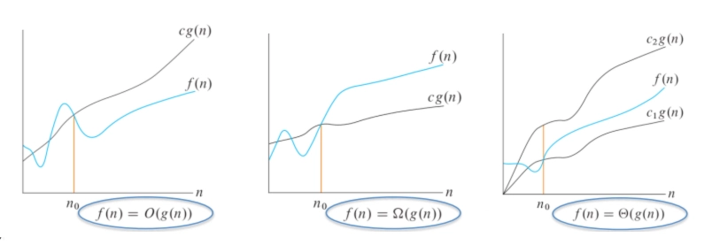
上界 (Upper Bound)
\(O\) notation: characterizes an
upper bound on the asymptotic behavior of a
function（描述函数渐近行为的上界）
a function grows no faster than a certain
rate（函数的增长速度不超过某个速率）
符号表示: \[
f (n) = O (g (n))
\]
定义： \[
\exists c > 0, n_0 > 0, \forall n \geq n_0,~ 0 \leq f(n) \leq
cg(n)
\]
下界 (Lower Bound)
\(\Omega\) notation: characterizes
a lower bound on the asymptotic behavior of a
function（描述函数渐近行为的下界）
a function grows at least as fast as a certain
rate（函数的增长速度至少与某个速率一样快）
符号表示: \[
f(n) = \Omega (g(n))
\]
定义： \[
\exists c > 0, n_0 > 0, \forall n \geq n_{0}, ~0 \leq cg(n) \leq
f(n)
\]
紧确界 (Tight Bound)
\(\Theta\) notation: characterizes
a tight bound on the asymptotic behavior of a
function（描述函数渐近行为的紧确界）
a function grows precisely at a certain rate on the highest-order
term（函数在最高阶项上以某个速率精确增长）
For any two functions \(f(n)\) and
\(g(n)\), we have \[
f (n) = \Theta (g (n)) \Leftrightarrow
\begin{cases}
f (n) = O (g (n))\\
f (n) = \Omega (g (n))
\end{cases}
\]
NPC 问题（NP-Complete
Problems）
定义
P: The class P consists of those problems that
are solvable in polynomial
time（多项式时间内可解的问题类）
NP: The class NP consists of those problems that
are verifiable in polynomial
time（多项式时间内可验证的问题类）
Given a certificate, verify that the certificate is correct in
polynomial time（给定一个解答，在多项式时间内验证该解答是否正确）
Any problem in P also belongs to NP：\(P
\subseteq NP\)（P 类中的任何问题也属于 NP 类）
NP-hard: A problem belongs to NP-hard if it is
at least as hard as any problem in NP（可以不是 NP 问题，至少和 NP
问题中最难的问题一样难）
Intractable problems（难解问题）
NP-complete: A problem belongs to NP-complete
(NPC) if it belongs to NP and is NP-hard（属于 NP 且是 NP-hard
的问题：NP 类问题中最难的问题）
关系
If any problem in NP is not polynomial-time
solvable, then no NP-complete problem is polynomial-time
solvable（如果 NP 中存在问题不是多项式时间可解的，那么没有 NPC
问题是多项式时间可解的）
If any NP-complete problem is polynomial-time
solvable, then every problem in NP has a polynomial-time
algorithm, i.e., \(P = NP\)（如果任何
NPC 问题是多项式时间可解的，那么 NP
中的每个问题都有一个多项式时间算法，即 P = NP）
The relationship most theoretical computer scientists believe:
\(P \neq
NP\)（大多数理论计算机科学家相信的关系：\(P \neq NP\)） 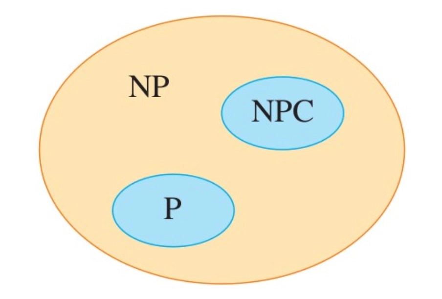
规约 (Reductions)
Reductions（归约）
Reduction is a procedure transforms any instance
\(\alpha\) of \(A\) into some instance
\(\beta\) of \(B\)（一个过程将 \(A\) 的任何实例 \(\alpha\) 转换为 \(B\) 的某个实例 \(\beta\)）
The transformation takes polynomial
time（转换需要多项式时间）
The answers are the same（答案是相同的）
If such a reduction exists, we say that \(A\) is polynomial-time reducible to \(B\), denoted by \(A \leq_{\mathrm{P}}
B\)（如果存在这样的归约，我们说 \(A\) 在多项式时间内可归约为 \(B\)，记为 \(A
\leq_{\mathrm{P}} B\)）
B is at least as hard as A（B 至少和 A 一样难）
Using reductions to solve problems（使用归约来解决问题）
Given an instance \(\alpha\) of
problem \(A\), use a polynomial-time
reduction algorithm to transform it to an instance \(\beta\) of problem \(B\)（给定问题 \(A\) 的实例 \(\alpha\)，使用多项式时间归约算法将其转换为问题
\(B\) 的实例 \(\beta\)）
Run the polynomial-time decision algorithm for \(B\) on the instance \(\beta\)（在实例 \(\beta\) 上运行问题 \(B\) 的多项式时间决策算法）
Use the answer for \(\beta\) as the
answer for \(\alpha\)（将 \(\beta\) 的答案用作 \(\alpha\) 的答案）
if we have a polynomial-time algorithm for \(B\), we can solve \(A\) in polynomial time
too（如果我们有一个多项式时间算法用于 \(B\)，我们也可以在多项式时间内解决 \(A\)）
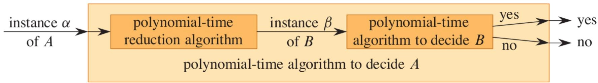
证明 NPC
Decision problems vs. optimization problems（决策问题 vs. 优化问题）
Decision problems: the answer is simply yes or
no（决策问题：答案仅为是或否）
PATH (Decision problem): Given an undirected graph \(G\), vertices \(u\) and \(v\), and an integer \(k\), does a path exist from \(u\) to \(v\) consisting of at most \(k\) edges?（无向图中是否存在从 \(u\) 到 \(v\) 的最多由 \(k\) 条边组成的路径？）
Optimization problems: the answer is some optimal
value（优化问题：答案是某个最优值）
SHORTEST-PATH (Optimization problem): Given an undirected graph
\(G\), vertices \(u\) and \(v\), what is the length of the shortest
path from \(u\) to \(v\)?（无向图中从 \(u\) 到 \(v\) 的最短路径长度是多少？）
If a decision problem is hard, its related optimization problem is
hard
We usually use reductions to transform a decision problem \(A\) to an optimization problem \(B\)（我们通常使用归约将决策问题 \(A\) 转换为优化问题 \(B\)）
Using polynomial-time reductions in the opposite
way to show that a problem \(B\) is
NP-complete（以相反的方式使用多项式时间归约来证明问题 \(B\) 是 NPC 的）
Show that \(B\) belongs to NP（证明
\(B\) 属于 NP）
Select a known NP-complete problem \(A\)（选择一个已知的 NP-complete 问题 \(A\)）
Show that \(A \leq_{\mathrm{P}}
B\)（证明 \(A \leq_{\mathrm{P}}
B\)）
Conclude that \(B\) is
NP-complete（得出结论 \(B\) 是 NPC
的）
示例
哈密顿回路与旅行商问题
哈密顿回路 (Hamiltonian cycles)
A hamiltonian cycle of an undirected graph \(G = (V, E)\) is a cycle that visits each
vertex exactly
once（一个无向图的哈密顿回路是一个恰好访问每个顶点一次的回路） \[\langle v_{1},v_{2},\ldots,v_{|V|}\rangle \quad
\forall i, (v_{i},v_{i+1})\in E, (v_{|V|},v_{1})\in E\]
Decision problem: whether a hamiltonian cycle exists in a given
graph（决策问题：给定图中是否存在哈密顿回路）
旅行商问题 (The traveling salesman problem, TSP)
Given a set of cities and the distances between each pair of cities,
what is the shortest possible route that visits each city exactly once
and returns to the origin
city?（给定一组城市以及每对城市之间的距离，访问每个城市恰好一次并返回原始城市的最短可能路线是什么？）
Optimization problem: find the shortest hamiltonian
cycle（优化问题：找到最短的哈密顿回路）
Reduction: HAM-CYCLE \(\leq_{\mathrm{P}}\) TSP
电路可满足性问题 (The circuit-satisfiability problem)
Given a boolean circuit \(C\) with
\(n\) inputs and one output, is there
an assignment of the inputs such that the output is 1?（给定一个具有
\(n\) 个输入和一个输出的布尔电路 \(C\)，是否存在输入的赋值使得输出为
1？）
The first NP-complete problem
Cook-Levin Theorem: any problem in NP can be reduced in polynomial
time to the circuit-satisfiability problem（Cook-Levin 定理：NP
中的任何问题都可以在多项式时间内归约为电路可满足性问题）
团问题与顶点覆盖问题
团问题 (The clique problem)
Clique: a subset of vertices of an undirected graph \(G = (V, E)\) such that every two distinct
vertices are adjacent.（团：无向图 \(G = (V,
E)\) 的一个顶点子集，其中每两个不同的顶点都是相邻的。）
Optimization problem: find a clique of maximum
size（优化问题：找到最大规模的团）
Decision problem: whether a clique of a given size \(k\) exists（决策问题：是否存在给定大小
\(k\) 的团）
Naive solution: lists all \(k\)
-subsets of \(V\) and checks each one
to see whether it forms a clique（暴力解法：列出 \(V\) 的所有 \(k\) 子集，并检查每个子集是否形成一个团）
Time complexity: \(O\left(\binom{|V|}{k}
\cdot k^{2}\right)\)
顶点覆盖问题 (The vertex-cover problem)
A vertex cover of an undirected graph \(G
= (V, E)\) is a subset \(V^\prime
\subseteq V\) such that if \((u,v)\in
E\), then \(u\in V^{\prime}\) or
\(v\in V^{\prime}\) (or both)（无向图
\(G = (V, E)\) 的顶点覆盖是一个满足如果
\((u,v)\in E\)，则 \(u\in V^{\prime}\) 或 \(v\in V^{\prime}\) 或两者皆是的顶点子集
\(V^\prime \subseteq V\)）
Optimization problem: find a vertex cover of minimum
size（优化问题：找到最小规模的顶点覆盖）
Decision problem: whether a graph has a vertex cover of a given size
\(k\)（决策问题：图是否具有给定大小
\(k\) 的顶点覆盖）
CLIQUE \(\leq_{\mathrm{P}}\)
VERTEX-COVER
Assume CLIQUE is an NP-hard problem
Given an undirected graph \(G = (V,
E)\), the complement of \(G\) is
a graph \(\bar{G} = (V, \bar{E})\),
where（给定无向图 \(G = (V, E)\)，\(G\) 的补图是图 \(\bar{G} = (V, \bar{E})\)，其中） \[
\bar {E} = \{(u, v) \colon u, v \in V, u \neq v, (u, v) \notin E \}
\] 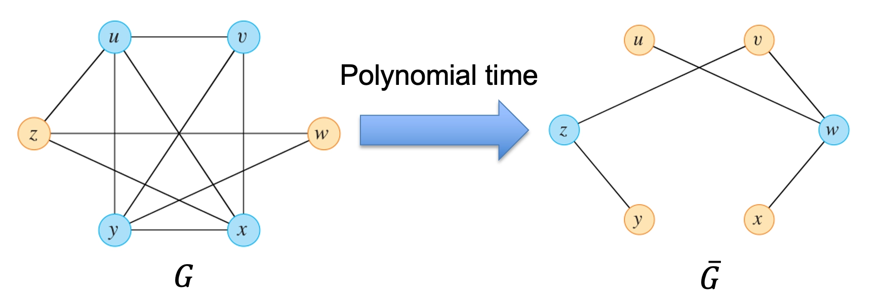
The graph \(G\) contains a clique
of size \(k\)if and only
if the graph \(\bar{G}\) has a
vertex cover of size \(|V| - k\)（图
\(G\) 包含大小为 \(k\) 的团当且仅当图 \(\bar{G}\) 具有大小为 \(|V| - k\) 的顶点覆盖）
Assume \(G\) contains a clique
\(V^\prime\) of size \(|V^\prime| = k\), we try to show that \(V - V^\prime\) is a vertex cover of size
\(|V| - k\) in \(\bar{G}\)
\(\forall (v, w) \in \bar{E}\), we
have \((v, w) \notin E\)
Since \(V^\prime\) is a clique in
\(G\), at least one of \(v\) and \(w\) is not in \(V^\prime\)
That means, at least one of \(v\)
and \(w\) is in \(V - V^{\prime}\)
\(V - V^{\prime}\) is a vertex
cover
Conversely,
Assume that \(\bar{G}\) has a
vertex cover \(V^\prime \subseteq V\)
of size \(|V^\prime| = k\), we try to
show that \(V - V^\prime\) is a clique
of size \(|V| - k\) in \(G\)
\(\forall (v, w) \in
\overline{E}\), we have \((v, w) \notin
E\)
Since \(V^\prime\) is a vertex
cover in \(\bar{G}\), at least one of
\(v\) and \(w\) is in \(V^\prime\)
That means, at most one of \(v\)
and \(w\) is in \(V - V^{\prime}\)
\(V - V^{\prime}\) is a clique
The reduction can be done in polynomial time by constructing the
complement graph \(\bar{G}\)（通过构造补图 \(\bar{G}\) 可以在多项式时间内完成归约）
More NP-complete problems 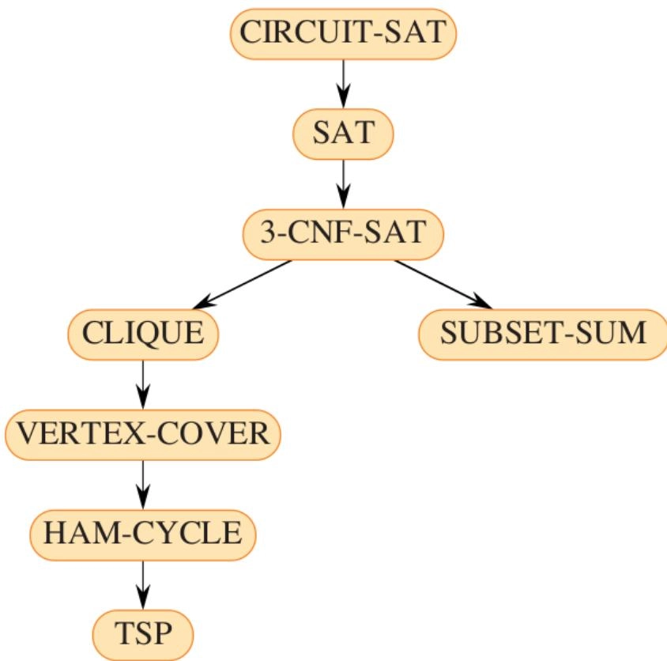
顺序算法
分治法 (Divide and Conquer)
分治法概述
Divide the problem into one or more subproblems
that are smaller instances of the same
problem（将问题划分为一个或多个更小的同类子问题）
Conquer the subproblems by solving them
recursively（通过递归地解决子问题来解决它们）
Combine the subproblem solutions to form a solution
to the original
problem（将子问题的解决方案组合成原始问题的解决方案）
归并排序 (Merge sort)
基本思想
Divide the subarray \(A[p, r]\) to be sorted into two adjacent
subarrays, each of half the size（将要排序的子数组 \(A[p, r]\)
分成两个相邻的子数组，每个子数组大小为一半）
Compute the midpoint \(q\) of \(A[p, r]\)（计算 \(A[p, r]\) 的中点 \(q\) ）
Divide \(A[p,r]\) into subarrays
\(A[p,q]\) and \(A[q + 1,r]\)（将 \(A[p,r]\) 分成子数组 \(A[p,q]\) 和 \(A[q
+ 1,r]\)）
Conquer by sorting each of the two subarrays \(A[p, q]\) and \(A[q + 1, r]\) recursively using merge
sort（通过使用归并排序递归地排序两个子数组 \(A[p, q]\) 和 \(A[q + 1, r]\) 来解决）
Combine by merging the two sorted subarrays \(A[p, q]\) and \(A[q + 1, r]\) back into \(A[p, q]\), producing the sorted
answer（通过将两个已排序的子数组 \(A[p,
q]\) 和 \(A[q + 1, r]\) 合并回
\(A[p, q]\)
来组合，生成排序后的答案）
MERGE-SORT(A, p, r) if p < r then // 当前子数组至少有两个元素时 q = ⌊(p + r) / 2⌋ // 中点 MERGE-SORT(A, p, q) // 递归排序左半部分 MERGE-SORT(A, q + 1, r) // 递归排序右半部分 MERGE(A, p, q, r) // 合并两个已排序的子数组MERGE(A, p, q, r) nL = q - p + 1 // 左子数组的大小 nR = r - q // 右子数组的大小 let L[0:nL - 1] and R[0:nR - 1] be new arrays for i = 0 to nL - 1 L[i] = A[p + i] for j = 0 to nR - 1 R[j] = A[q + 1 + j] i = 0 // i 为 L 中最小未处理元素的索引 j = 0 // j 为 R 中最小未处理元素的索引 k = p // k 为 A 中待填充位置的索引 while i < nL and j < nR // 合并 L 和 R 到 A 中 if L[i] ≤ R[j] A[k] = L[i] i = i + 1 else A[k] = R[j] j = j + 1 k = k + 1 while i < nL A[k] = L[i] i = i + 1 k = k + 1 while j < nR A[k] = R[j] j = j + 1 k = k + 1
\[
T (n) = 2 T\left(\frac{n}{2}\right) + \Theta (n)
\]
示例： 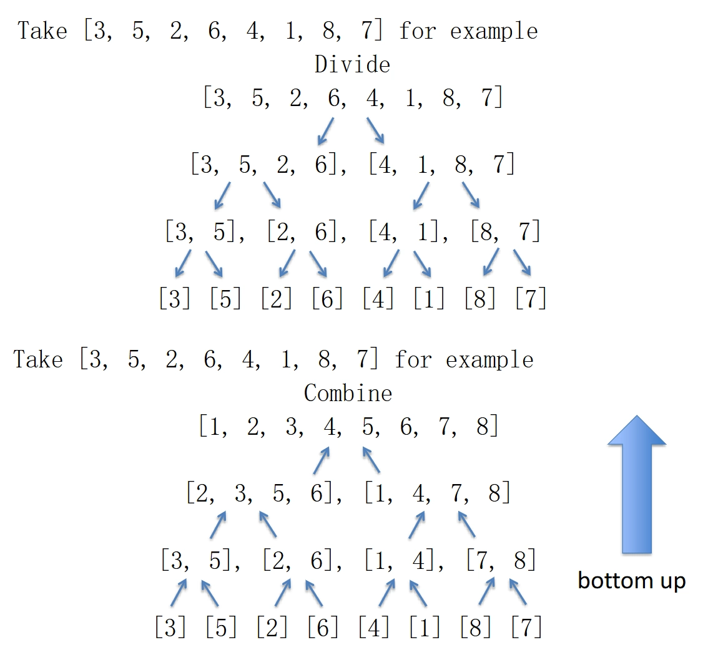
复杂度分析
Recurrence equation（递归方程）
For simplicity, we assume \(n =
2^m\) for some integer \(m \geq
0\)\[
\quad T (n) =
\left\{ \begin{array}{c}
c_{1}, &~n = 1 \\
2T \left(\frac {n}{2}\right) + c_{2} n, &~n > 1
\end{array} \right.
\]
Recurrence tree: \(T(n) = 2
T\left(\frac{n}{2}\right) + c_{2} n\) 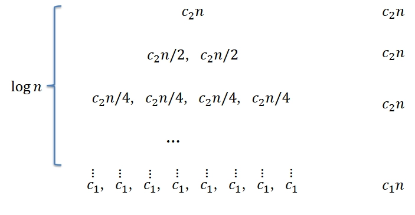 \[
T(n) = c_{2} n \log n + c_{1} n = \Theta (n \log n)
\]
复杂度分析方法
分析分治算法的时间复杂度通常涉及解决递归关系（recurrence
relations）
三种常用的方法:
代入法 (The substitution method)
递归树法 (The recursion-tree method)
公式法 (The master method)
代入法 (The substitution
method)
步骤:
Guess the form of the solution using symbolic
constants（使用符号常数猜测解决方案的形式）
Use mathematical induction to show that the
solution works, and find the
constants（使用数学归纳法证明解决方案有效，并找到常数）
示例： 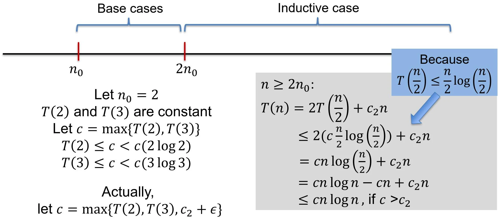
Avoiding pitfalls（避免陷阱）
We must prove \(T(n) \leq f(n)\)
for some \(f(n)\), but not \(T(n) \leq O(n)\),（我们必须证明 \(T(n) \leq f(n)\) 对于某些 \(f(n)\) ，而不是 \(T(n) \leq O(n)\) ）
E.g., if we intend to prove \(T(n) \leq
O(n)\), then we must assume \(T(n) \leq
cn\) for some \(c\) and all
\(n \geq n_0\), and prove it by
induction（例如，如果我们打算证明 \(T(n) \leq
O(n)\) ，那么我们必须假设 \(T(n) \leq
cn\) 对于某些 \(c\) 和所有 \(n \geq n_0\) ，并通过归纳法证明它）
递归树法 (The recursion-tree
method)
步骤:
Visualize the recurrence as a tree（将递归可视化为一棵树）
Compute the total cost by summing the costs at each level of the
tree（通过对树的每一层的成本求和来计算总成本）
Example 2:\(T(n) = 8
T\left(\frac{n}{2}\right) + c_{2} n\) 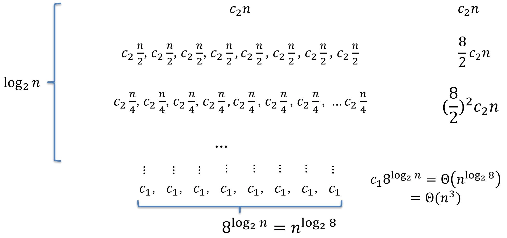
\[
\begin{aligned}
&c_{2} n + 4 c_{2} n + 4^{2} c_{2} n + \dots 4^{\log_{2} n} c_{2}
n \\
=& \sum_{i=0}^{\log_{2} n} 4^{i} c_{2} n \\
=& \frac{4^{(\log_{2} n) + 1} - 1}{4 - 1} c_{2} n \\
=& \frac{4 n^{\log_{2} 4} - 1}{3} c_{2} n \\
=& \Theta (n^{3}) \\\\
\therefore &\sum_{i=0}^{\log_{2} n} 4^{i} c_{2} n + \Theta (n^{3})
= \Theta (n^{3})
\end{aligned}\]
公式法 (The master method)
Solving algorithmic recurrences of the
form（解决以下形式的算法递归） \[
T(n) = aT \left(\frac{n}{b}\right) + f (n),\quad a > 0, b > 1
\]
\(f(n)\) is a driving function, the
costs for dividing and combining（\(f(n)\)
是驱动函数，表示划分和合并的成本）
\(a\) is the number of
subproblems（\(a\)
是子问题的数量）
\(n/b\) is the size of each
subproblem（\(n/b\)
是每个子问题的大小）
Case I
If there exists a constant \(\epsilon >
0\) such that \[f(n) = O(n^{\log_{b} a
- \epsilon})\] Then \[T(n) = \Theta
(n^{\log_b a})\]
\(n^{\log_b a}\) is the watershed
function （\(n^{\log_b a}\)
是分水岭函数）
The watershed function grows polynomially faster than the driving
function by a factor of \(\Theta
(n^{\epsilon})\)（分水岭函数的增长速度比驱动函数快 \(\Theta (n^{\epsilon})\) 倍）
示例：\(T(n) = 8T\left(\frac{n}{2}\right)
+ c_2 n = \Theta (n^{3})\) 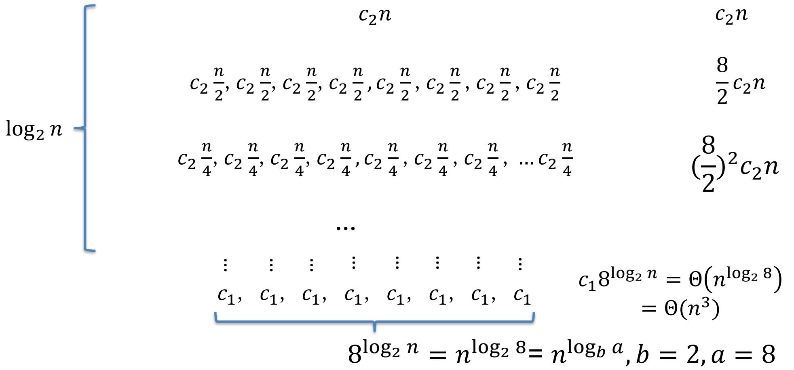
Case II
If there exists a constant \(K \geq
0\) such that \[f (n) = \Theta \left(n
^ {\log_ {b} a} (\log n) ^ {K}\right)\] Then \[T(n) = \Theta (n^{\log_b a}(\log n)^{K +
1})\]
The driving function grows faster than the watershed function only
by a factor of \((\log n)^{K}\)（案例
II：驱动函数的增长速度仅比分水岭函数快 \((\log
n)^{K}\) 倍）
If there exists a constant \(\epsilon >
0\) such that \[f (n) = \Omega (n ^
{\log_ {b} a + \epsilon})\] And \[\exists c < 1, \forall n \geq n_0, a
f\left(\frac{n}{b}\right) \leq c f(n)\] Then \[T(n) = \Theta (f(n))\]
The driving function grows polynomially faster than the watershed
function by a factor of \(\Theta
(n^{\epsilon})\)（驱动函数的增长速度比分水岭函数快 \(\Theta (n^{\epsilon})\) 倍）
DP typically applies to optimization problems（DP
通常应用于优化问题）
Find a solution with the optimal
value（找到具有最佳值的解决方案）
动态规划与分治法的异同
相同：Solves problems by combining the solutions to
subproblems（通过组合子问题的解决方案来解决问题）
不同：
The subproblems overlap（子问题重叠）
Subproblems share subproblems（子问题共享子问题）
Solves each subproblem only once and saves the result for future
reference（每个子问题只解决一次，并保存结果以供将来参考）
主要步骤
Characterize the structure of an optimal
solution（描述最优解的结构）
Recursively define the value of an optimal
solution（递归定义最优解的值）
Compute the value of an optimal solution, typically in a bottom-up
fashion（通常以自底向上的方式计算最优解的值）
(Optional) Construct an optimal solution from computed
information（从计算得出的信息中构造最优解）
实现方法
Top-down with memoization（自顶向下的备忘录法）
Write the procedure recursively（递归编写过程）
Store the results of each subproblem in a
table（将每个子问题的结果存储在表中）
Before solving a subproblem, check whether its result is already in
the table（在解决子问题之前，检查其结果是否已在表中）
Bottom-up（自底向上）
Sort the subproblems in some order such that when we are about to
solve a subproblem, we have already solved all of its
subproblems（以某种顺序对子问题进行排序，以便在我们即将解决子问题时，我们已经解决了它的所有子问题）
Typically implemented using iteration（通常使用迭代实现）
基本要点
Optimal substructure（最优子结构）
An optimal solution to the problem contains within it optimal
solutions to subproblems（问题的最优解包含其子问题的最优解）
a solution to the problem consists of making a
choice（解决问题的方案包括做出选择）
the solutions to the subproblems must be
optimal（子问题的解决方案必须是最优的）
Often uses optimal substructure in a bottom-up
fashion（通常以自底向上的方式使用最优子结构）
Overlapping subproblems（重叠子问题）
The space of subproblems must be small（子问题的空间必须很小）
the total number of distinct subproblems is a
polynomial（不同子问题的总数是多项式）
solve each subproblem only
once（每个子问题只解决一次）
store the solutions in a table for future
reference（将解决方案存储在表中以供将来参考）
Saving subproblem solutions comes with a cost: the additional memory
needed to store
solutions（保存子问题解决方案是有代价的：存储解决方案所需的额外内存）
a time-memory trade-off（时间-内存权衡）
杆切割问题 (Rod cutting)
问题描述
length \(i\)
1
2
3
4
5
6
7
8
9
10
price\(p_i\)
1
5
8
9
10
17
17
20
24
30
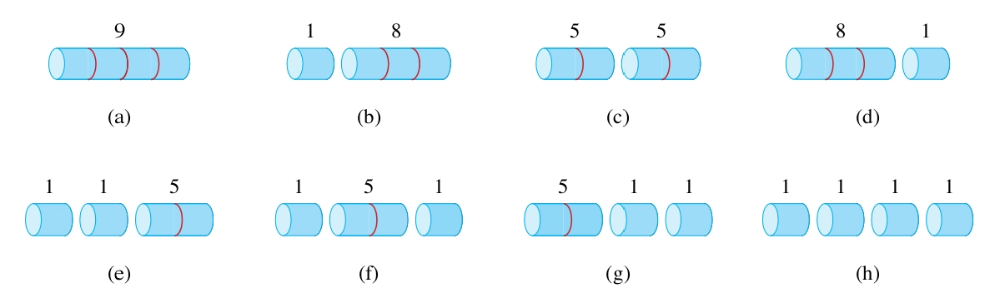
Given a rod of length \(n\) and a
table of prices \(p_{i}\) for \(i = 1, 2, \ldots, n\), determine the
maximum revenue \(r_{n}\) obtainable by
cutting up the rod and selling the pieces（给定长度为 \(n\) 的杆和价格表 \(p_{i}\) ，其中 \(i = 1, 2, \ldots, n\)
，确定通过切割杆并出售零件可以获得的最大收入 \(r_{n}\)）
An optimal solution cuts the rod into \(k\) pieces: \(i_1, i_2, \ldots, i_k\), where \(1 \leq k \leq n\) and \(\sum_{j=1}^{k} i_j = n\), obtaining revenue
\(r_n = \sum_{j=1}^{k} p_{i_j}\)
（最优解将杆切成 \(k\) 个部分： \(i_1, i_2, \ldots, i_k\) ，其中 \(1 \leq k \leq n\) 且 \(\sum_{j=1}^{k} i_j = n\) ，获得收入 \(r_n = \sum_{j=1}^{k} p_{i_j}\)）
最优子结构
Let \(r_n\) be the optimal revenue
for a rod of length \(n\). Suppose that
in an optimal solution the first piece cut from the rod has length \(i\), where \(1
\leq i \leq n\). Then the revenue \(r_n\) is given by（设 \(r_n\) 为长度为 \(n\)
的杆的最佳收入。假设在最优解中，从杆上切下的第一块的长度为 \(i\) ，其中 \(1
\leq i \leq n\) 。则收入 \(r_n\)
由下式给出） \[
r_n = p_i + r_{n - i}
\]
recursive formula for optimal revenue \(r_n\) : \[
r_n = \left\{ \begin{array}{ll}
0 & n = 0 \\
\max_{1 \leq i \leq n} (p_i + r_{n - i}) & n \geq 1
\end{array} \right.
\]
递归解法 (recursive solution)
Trivial solution: try to cut up a rod of length \(n\) in \(2^{n -
1}\) different ways（简单解法：尝试以 \(2^{n - 1}\) 种不同方式切割长度为 \(n\) 的杆）
Less than \(2^{n - 1}\) if in order
of monotonically increasing size（如果按单调递增的顺序，则少于 \(2^{n - 1}\) ）
1 2 3 4 5 6 7
CUT_ROD(p, n) // p: 价格表, n: 杆长度 if n == 0 return 0 q = -∞ for i = 1 to n q = max(q, p[i] + CUT_ROD(p, n - i)) return q
\(T(n)\) : The total number of
calls made to CUT-ROD（\(T(n)\) 为对
CUT-ROD 进行的总调用次数） \[
T(n) = 1 + \sum_{j = 0}^{n - 1} T(j) = 2^{n}
\]
存在大量重叠子问题 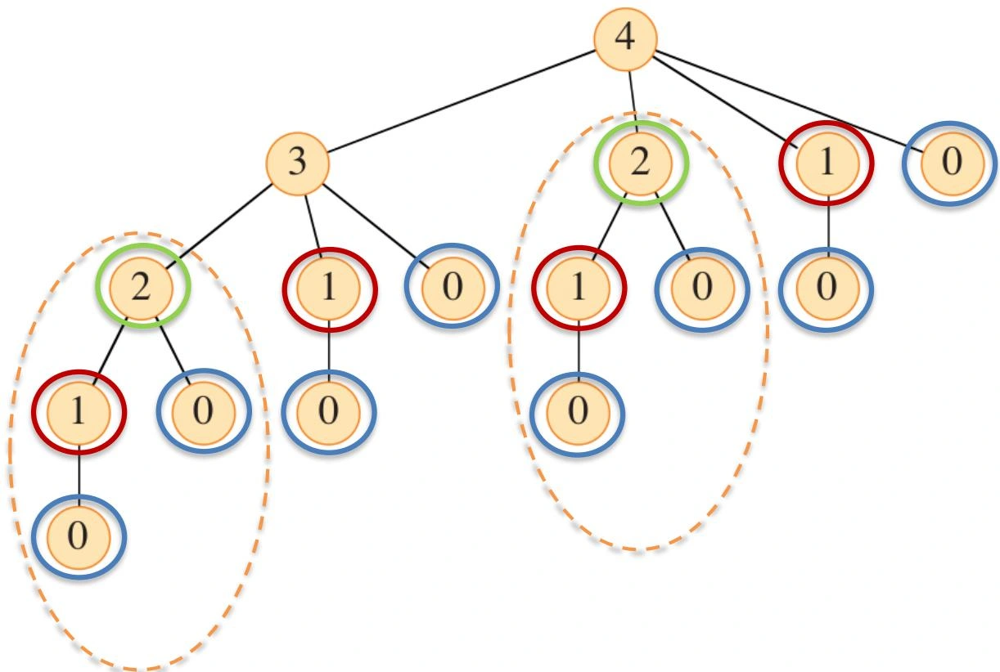
动态规划 (dynamic
programming)
Often uses optimal substructure in a bottom-up
fashion（通常以自底向上的方式使用最优子结构）
The subproblems of determining optimal ways to cut up rods of length
\(i\) for \(i
\in \{0, 1, \ldots, n-1\}\)（确定切割长度为 \(i\) 的杆的最佳方法的子问题，其中 \(i \in \{0, 1, \ldots, n-1\}\)）
Determine which of these subproblems yielded an optimal solution for
a rod of length \(n\)（确定这些子问题中哪些为长度为 \(n\) 的杆产生了最优解）
making a choice among subproblems（在子问题之间做出选择）
1 2 3 4 5 6 7 8 9
BOTTOM_UP_CUT_ROD(p, n) // p: 价格表, n: 杆长度 let r[0:n] be a new array // r[j]存储长度为j的杆的最大收益 r[0] = 0 for j = 1 to n // j 为当前杆长度 q = -∞ for i = 1 to j // i 为当前切割长度 q = max(q, p[i] + r[j - i]) r[j] = q return r[n]
1 2 3 4 5 6 7 8 9 10 11 12 13 14 15 16 17
EXTENDED_BOTTOM_UP_CUT_ROD(p, n) let r[0:n] and s[0:n] be new arrays // r[j]: 最大收益, s[j]: 第一次切割位置 r[0] = 0 for j = 1 to n q = -∞ for i = 1 to j if q < p[i] + r[j - i] q = p[i] + r[j - i] s[j] = i r[j] = q return r, sPRINT_CUT_ROD_SOLUTION(p, n) r, s = EXTENDED_BOTTOM_UP_CUT_ROD(p, n) while n > 0: print(s[n]) // first cut location n = n - s[n] // remaining length
\[
T(n) = \Theta (n^{2})
\]
示例：
Input：
length \(i\)
1
2
3
4
5
6
7
8
9
10
price\(p_i\)
1
5
8
9
10
17
17
20
24
30
Output：
length\(i\)
0
1
2
3
4
5
6
7
8
9
10
r[i]
0
1
5
8
10
13
17
18
22
25
30
s[i]
1
2
3
2
2
6
1
2
3
10
最长公共子序列
(LCS-Longest Common Subsequence)
问题描述
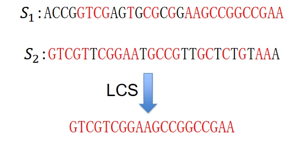
LCS
Given two sequences \(X =\langle x_{1},
x_{2}, \ldots, x_{m}\rangle\) and \(Y =
\langle y_{1}, y_{2}, \ldots, y_{n} \rangle\), find a longest
common subsequence of \(X\) and \(Y\)（给定两个序列 \(X\) 和 \(Y\)，找到他们的最长公共子序列）
A subsequence of a sequence is a new sequence formed from the
original sequence by deleting some (can be none) of the elements without
disturbing the relative positions of the remaining
elements（序列的子序列是从原始序列中删除某些元素而不干扰剩余元素的相对位置而形成的新序列）
最优子结构
Let \(X =\langle x_{1~~}, x_{2}, \ldots,
x_{m}\rangle\) and \(Y = \langle y_{1},
y_{2}, \ldots, y_{n} \rangle\) be sequences, and let \(Z = \langle z_{1}, z_{2}, \ldots, z_{k}
\rangle\) be any LCS of \(X\)
and \(Y\)
If \(x_{m} = y_{n}\), then \(z_{k} = x_{m} = y_{n}\) and \(Z_{k-1}\) is an LCS of \(X_{m-1}\) and \(Y_{n-1}\)
If \(x_{m} \neq y_{n}\) and \(z_{k} \neq x_{m}\), then \(Z\) is an LCS of \(X_{m-1}\) and \(Y\)
If \(x_{m} \neq y_{n}\) and \(z_{k} \neq y_{n}\), then \(Z\) is an LCS of \(X\) and \(Y_{n-1}\)
recursive formula of LCS length \(c[i,
j]\)\[
c[i,j] = \left\{ \begin{array}{ll}
0 & i = 0 ~or~ j = 0 \\
c[i-1,j-1] + 1 & i, j > 0 ~and~ x_{i} = y_{j}\\
\max \{c[i,j-1], c[i-1,j] \} & i, j > 0 ~and~ x_{i} \neq
y_{j}\end{array} \right.
\]
算法伪代码
1 2 3 4 5 6 7 8 9 10 11 12 13 14 15 16 17 18
LCS_LENGTH(X, Y, m, n) let b[1:m, 1:n] and c[0:m, 0:n] be new tables // b: 方向表, c: 长度表 for i = 0 to m c[i][0] = 0 for j = 0 to n c[0][j] = 0 for i = 1 to m for j = 1 to n if x[i] == y[j] c[i][j] = c[i-1][j-1] + 1 b[i][j] = "↖" // diagonal else if c[i-1][j] >= c[i][j-1] c[i][j] = c[i-1][j] b[i][j] = "↑" // up else c[i][j] = c[i][j-1] b[i][j] = "←" // left return b, c
\[
T (m, n) = \Theta (m n)
\]
1 2 3 4 5 6 7 8 9 10
PRINT_LCS(b, X, i, j) if i == 0 or j == 0 return if b[i][j] == "↖" PRINT_LCS(b, X, i - 1, j - 1) print(X[i - 1]) elif b[i][j] == "↑" PRINT_LCS(b, X, i - 1, j) else: PRINT_LCS(b, X, i, j - 1)
\[
T (m, n) = \Theta (m + n)
\]
示例： 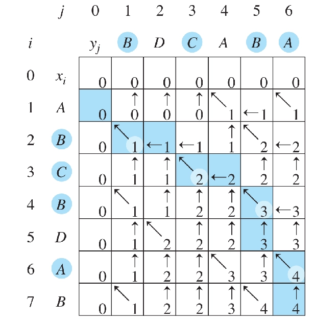
最优二叉搜索树
(Optimal binary search trees)
问题描述
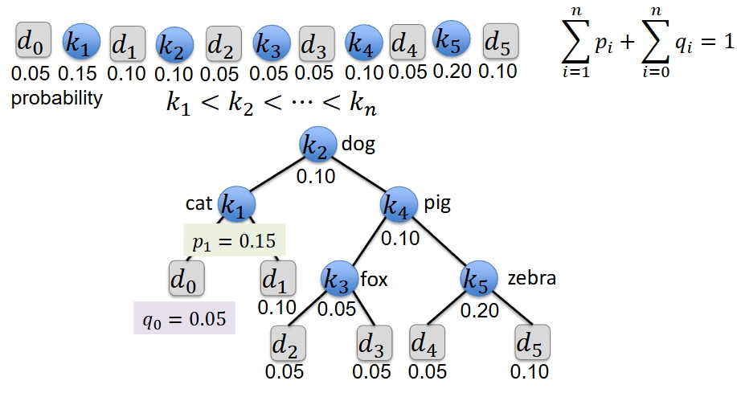
Given a sequence of \(n\) keys
\(k_{1} < k_{2} < \ldots <
k_{n}\), with associated search probabilities \(p_{1}, p_{2}, \ldots, p_{n}\), build a
binary search tree of all \(n\) keys
that minimizes the expected search cost（给定一系列 \(n\) 个键 \(k_i\) 以及相关的搜索概率 \(p_i\)，构建包含所有 \(n\)
个键的二叉搜索树，以最小化预期搜索成本）
Additionally, there are \(n +
1\) dummy keys \(d_{0}, d_{1}, \ldots,
d_{n}\), with associated search probabilities \(q_{0}, q_{1}, \ldots, q_{n}\), representing
values not in the tree（此外，还有 \(n +
1\) 个虚拟键 \(d_i\)
，表示树中不存在的值）
each dummy key \(d_{i}\)
corresponds to the interval \((k_{i-1},
k_{i})\) （每个虚拟键 \(d_{i}\)
对应于区间 \((k_{i-1}, k_{i})\) ）
The probabilities satisfy（这些概率满足） \[\sum_{i=1}^{n} p_{i} + \sum_{i=0}^{n} q_{i} =
1\]
The expected cost of a search is \[
\operatorname{E}(\text{search cost in } T) = \sum_{i=1}^{n}
(\operatorname{depth}_T(k_i) + 1) \times p_i + \sum_{i=0}^{n}
(\operatorname{depth}_T(d_i) + 1) \times q_i
\]
示例 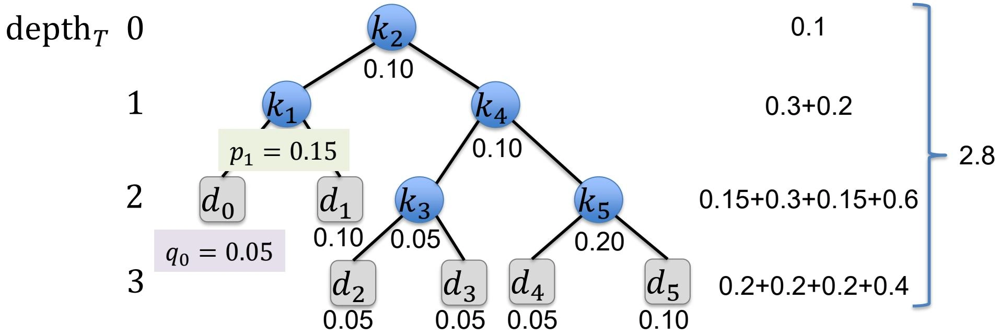 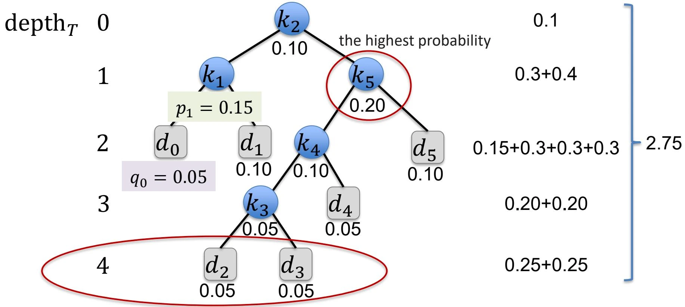
最优子结构
Let \(e(i,j)\) denote the expected
cost of searching an optimal binary search tree containing the keys
\(k_{i},\ldots,k_{j}\)（令 \(e(i,j)\) 表示包含键 \(k_{i},\ldots,k_{j}\)
的最优二叉搜索树的预期搜索成本）
Let \(w(i, j)\) denote the sum of
the probabilities between \(k_{i}\) and
\(k_{j}\)（令 \(w(i, j)\) 表示 \(k_{i}\) 到 \(k_{j}\) 之间的概率和） \[
w(i, j) = \sum_ {l = i} ^ {j} p _ {l} + \sum_ {l = i - 1} ^ {j} q _
{l} = \left\{ \begin{array} {ll}
q _ {i - 1} & j = i - 1 \\
w(i, j - 1) + p _ {j} + q _ {j} & i \leq j
\end{array} \right.
\]
示例 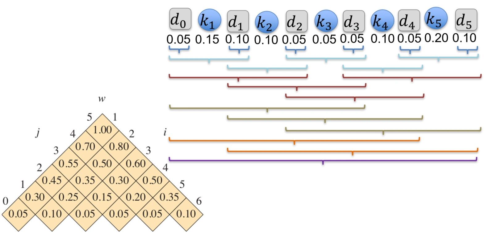
Let \(k_{r}\) be the root of an
optimal binary search tree containing the keys \(k_{i}, \ldots, k_{j}\), where \(i \leq r \leq j\)（令 \(k_{r}\) 为包含键 \(k_{i}, \ldots, k_{j}\)
的最优二叉搜索树的根，其中 \(i \leq r \leq
j\)） \[
e(i, j) = e(i, r - 1) + e(r + 1, j) + w(i, j)
\]
We thus have the following recursive formulation: \[
e(i, j) = \left\{ \begin{array}{ll}
q_{i - 1} & ~j = i - 1 \\
\min \{e(i, r - 1) + e(r + 1, j) + w(i, j) \colon i \leq r \leq j \}
& ~i \leq j
\end{array} \right.
\]
Our goal: compute \(e(1, n)\)
算法伪代码
1 2 3 4 5 6 7 8 9 10 11 12 13 14 15 16
OPTIMAL_BST(p, q, n) let e[1:n+1, 0:n], w[1:n+1, 0:n], root[1:n, 1:n] be new tables // e: 期望搜索成本表, w: 概率和表, root: 根表 for i = 1 to n + 1 e[i][i - 1] = q[i - 1] w[i][i - 1] = q[i - 1] for l = 1 to n // l: 子问题长度 for i = 1 to n - l + 1 // i: 子问题起始位置 j = i + l - 1 // j: 子问题结束位置 e[i][j] = ∞ w[i][j] = w[i][j - 1] + p[j] + q[j] for r = i to j // r: 根位置 t = e[i][r - 1] + e[r + 1][j] + w[i][j] if t < e[i][j] e[i][j] = t root[i][j] = r return w, e, root
A greedy algorithm always makes the choice that looks best
at the moment（贪心算法总是做出在当前时刻看起来最好的选择）
A locally optimal choice \(\rightarrow\) a globally optimal
solution
应用：
Minimum-spanning-tree algorithms
Dijkstra’s algorithm for shortest paths
基本要点
A top-down approach: make a sequence of
choices（自顶向下的方法：做出一系列选择）
At each decision point, the algorithm makes the choice that seems
best at the
moment（在每个决策点，算法做出当时看起来最好的选择）
Two ingredients（两个要素）
greedy-choice property（贪心选择属性）
Assemble a globally optimal solution by making locally optimal
(greedy) choices（通过做出局部最优选择来组装全局最优解）
Without considering results from
subproblems（不考虑子问题的结果）
Make the first choice before solving any
subproblems（在解决任何子问题之前做出第一个选择）
optimal substructure（最优子结构）
An optimal solution to the problem contains within it optimal
solutions to subproblems（问题的最优解包含其子问题的最优解）
For greedy algorithms, an optimal solution to the subproblem,
combined with the greedy choice already made, yields an optimal solution
to the original
problem（对于贪心算法，子问题的最优解与已经做出的贪心选择相结合，产生原始问题的最优解）
贪心 vs DP
贪心算法与动态规划的区别
Greedy: make a choice and then solve a
subproblem（做出选择然后解决子问题）
DP: solving all subproblems before making a
choice（在做出选择之前解决所有子问题）
背包问题 (The Knapsack Problem)
问题描述
take the most valuable load with at most \(W\) pounds（以不超过 \(W\) 磅的重量携带最有价值的负载）
the \(i\) th item is worth \(v_{i}\) dollars and weighs \(w_{i}\) pounds（第 \(i\) 件物品价值 \(v_{i}\) 美元，重量为 \(w_{i}\) 磅）
两种变体
The 0-1 knapsack problem
can only take whole items（只能取完整的物品）
DP
The fractional knapsack problem
can take fractions of items（可以取物品的部分）
Greedy
示例 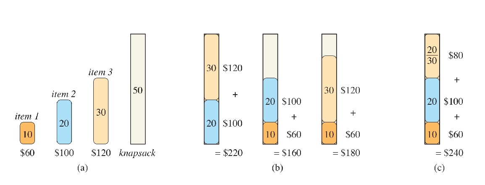
活动选择问题 (Activity
Selection Problem)
问题描述
Schedule several competing activities \(S = \{a_{1}, a_{2}, \ldots, a_{n}\}\) that
require exclusive use of a common
resource（安排几个需要独占使用公共资源的竞争活动）
Each activity \(a_i\) has a
start time \(s_i\) and a finish time
\(f_i\)\[
s_{i} < f_{i}
\]
Activities \(a_{i}\) and \(a_{j}\) are compatible if the intervals
\([s_{i}, f_{i})\) and \([s_{j}, f_{j})\) do not overlap（如果区间
\([s_{i}, f_{i})\) 和 \([s_{j}, f_{j})\) 不重叠，则活动 \(a_{i}\) 和 \(a_{j}\) 是兼容的） \[
s _ {i} \geq f _ {j} ~or~ s _ {j} \geq f _ {i}
\]
Goal: to select a maximum-size subset of mutually compatible
activities（目标：选择一个最大规模的相互兼容的活动子集）
Assume \(f_{1} \leq f_{2} \leq \dots
\leq f_{n}\)
i
1
2
3
4
5
6
7
8
9
10
11
\(s_i\)
1
3
0
5
3
5
6
8
8
2
12
\(f_i\)
4
5
6
7
9
9
10
11
12
14
16
\(\{a_{1}, a_{4}, a_{8}, a_{11}\}\)
is an optimal solution
DP solution
定义：
\(S_{ij}\): The set of activities
that start after activity \(a_i\)
finishes and that finish before activity \(a_j\) starts（在活动 \(a_i\) 结束后开始并在活动 \(a_j\) 开始前结束的活动集合）
Intuition: we maximize the number of compatible
activities（直觉：我们最大化兼容活动的数量）
choose an activity that leaves the resource available for as many
other activities as
possible（选择一项活动，使剩余资源可用于尽可能多的其他活动）
Choose the activity with the earliest finish
time（选择最早完成时间的活动）
Once you make the greedy choice, you have only one remaining
subproblem to
solve（一旦你做出了贪心选择，你就只有一个剩下的子问题要解决）
Let \(S_{k} = \{a_{i} \in S : s_{i} \geq
f_{k}\}\) be the set of activities that start after activity
\(a_{k}\) finishes（让 \(S_{k}\) 是在活动 \(a_{k}\) 结束后开始的活动集合）
If we select \(a_1\), then \(S_1\) remains as the only subproblem to
solve（如果我们选择 \(a_1\) ，那么
\(S_1\) 就是唯一需要解决的子问题）
Consider any nonempty subproblem \(S_{k}\), and let \(a_{m}\) be an activity in \(S_{k}\) with the earliest finish time. Then
\(a_{m}\) is included in some
maximum-size subset of mutually compatible activities of \(S_{k}\),（考虑任何非空子问题 \(S_{k}\) ，并让 \(a_{m}\) 是 \(S_{k}\) 中具有最早完成时间的活动。然后
\(a_{m}\) 被包含在 \(S_{k}\)
的某个最大规模的相互兼容活动子集中。）
A top-down approach
基本思想
Choose the activity \(a_{m}\) that
finishes first（选择最先完成的活动 \(a_{m}\) ）
Keep only the activities compatible with \(a_{m}\)（只保留与 \(a_{m}\) 兼容的活动）
Repeat until no activities remain（重复直到没有活动剩下）
算法伪代码
Assume that the input activities are ordered by monotonically
increasing finish time（假设输入活动按完成时间单调递增排序）
1 2 3 4 5 6 7 8
GREEDY_ACTIVITY_SELECTOR(s, f, n) A = {a_1} // 选择第一个活动 k = 1 for m = 2 to n do if s_m >= f_k then // 如果活动 a_m 与 a_k 兼容 A = A ∪ {a_m} // 将活动 a_m 添加到选择的活动集合 A 中 k = m // 更新最后选择的活动索引 k 为 m return A
\[
T(n) = \Theta(n)
\]
示例 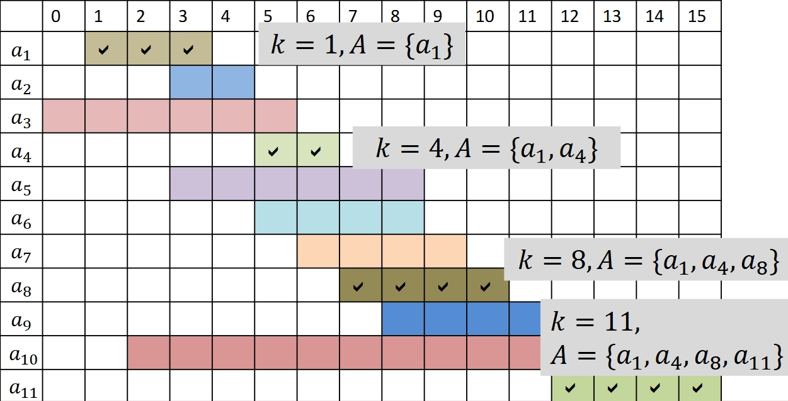
缓存置换问题 (The
Cache Replacement Problem)
问题描述
There are a sequence of \(n\)
memory requests to data in blocks \(b_{1},
b_{2}, \ldots, b_{n}\)（有一系列对块 \(b_i\) 中数据的内存请求）
The cache starts out empty, and can hold up to some fixed number
\(k\) of cache
blocks（缓存初始为空，最多可以容纳 \(k\) 个缓存块）
Each request causes at most one block to enter the cache and at most
one block to be evicted from the
cache（每个请求最多导致一个块进入缓存，最多一个块从缓存中被驱逐）
Block \(b_{i}\) is already in the
cache (cache hit)（块 \(b_{i}\)
已经在缓存中（缓存命中））
Block \(b_{i}\) is not in the cache
at that time, but the cache contains fewer than \(k\) blocks (cache misses)（块 \(b_{i}\) 当时不在缓存中，但缓存中包含少于
\(k\) 个块（缓存未命中））
Block \(b_{i}\) is not in the cache
at that time and the cache is full (cache misses)（块 \(b_{i}\)
当时不在缓存中，且缓存已满（缓存未命中））
Goal: minimize the number of cache
misses（目标：最小化缓存未命中的次数）
Offline version: the entire request sequence is
known in advance（离线版本：整个请求序列事先已知）
贪心策略
The solution is simple:
furthest-in-future（未来最远）
Evict the block in the cache whose next access in the request
sequence comes furthest in the
future（驱逐缓存中下一个访问请求序列中最远的块）
示例：\(k = 3\) and the request
sequence is：s, q, s, p, r, s, q, p, r, q 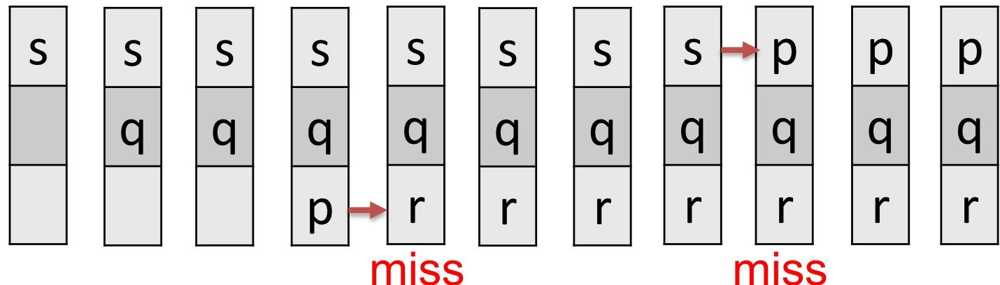
A solution to subproblem \((C, i)\)
is a sequence of decisions that specifies which blocks to evict（子问题
\((C, i)\)
的解决方案是一系列决策，指定要驱逐哪些块）
An optimal solution \(S\) minimizes
the number of cache misses（最优解使得缓存未命中的次数最少）
Consider an optimal solution \(S\)
to subproblem \((C, i)\)（考虑子问题
\((C, i)\) 的最优解 \(S\) ）
let \(C^\prime\) be the contents of
the cache after processing the request for block \(b_i\)（让 \(C^\prime\) 是处理块 \(b_i\) 请求后的缓存内容）
Let \(S^\prime\) be the
sub-solution of \(S\) for the resulting
subproblem \((C^\prime, i + 1)\)（让
\(S^\prime\) 是子问题 \((C^\prime, i + 1)\) 的 \(S\) 的子解）
分情况讨论
Case I: cache hit
the cache remains unchanged, \(C =
C^{\prime}\)
Case II: cache miss
\(C \neq C^{\prime}\)
\(S^\prime\) is an optimal solution
to subproblem \((C^\prime, i +
1)\)
贪心选择性质
Consider a subproblem \((C, i)\)
when the cache \(C\) contains \(k\) blocks (it is full) and a cache miss
occurs（考虑子问题 \((C, i)\) ，当缓存
\(C\) 包含 \(k\)
个块（已满）并且发生缓存未命中时）
When block \(b_{i}\) is
requested, let \(z = b_{m}\) be the
block in \(C\) whose next access is
furthest in the future（当请求块 \(b_{i}\) 时，让 \(z = b_{m}\) 是位于 \(C\) 中的下一个访问最远的块） 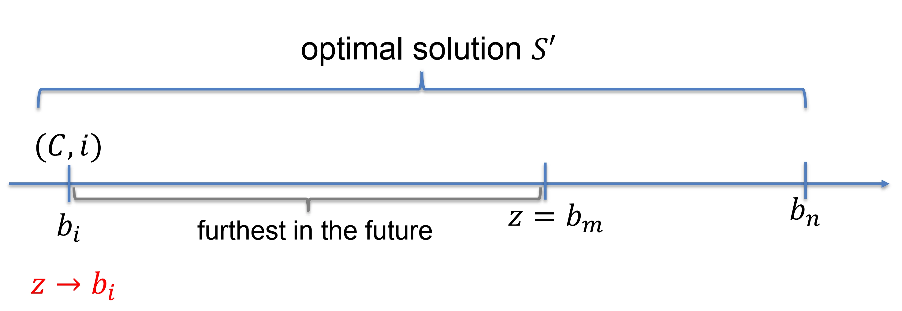
Theorem: Evicting block \(z\)
upon a request for block \(b_{i}\) is
included in some optimal solution for the subproblem \((C, i)\)（在请求块 \(b_{i}\) 时驱逐块 \(z\) 包含在子问题 \((C, i)\) 的某个最优解中）
Let \(S\) be an optimal solution
to subproblem \((C, i)\) 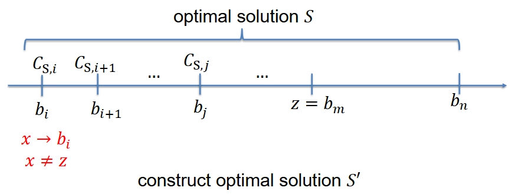
基本思想 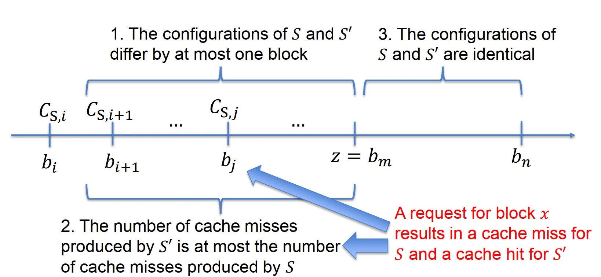
Before \(z\):
the configurations of \(S\) and
\(S^{\prime}\) differ by at most one
block（ \(S\) 和 \(S^{\prime}\) 的配置最多相差一个块）
The number of cache misses in \(S^{\prime}\) is at most the number of cache
misses in \(S\)（ \(S^{\prime}\) 中的缓存未命中次数最多为 \(S\) 中的缓存未命中次数）
after \(z\):
\(S\) and \(S^{\prime}\) have the same configuration（
\(S\) 和 \(S^{\prime}\) 具有相同的配置）
顺序算法──图算法
最小生成树 (Minimum Spanning
Trees)
最小生成树概述
应用
Telecommunications networks（电信网络）
Computer networks（计算机网络）
Electronic circuit designs（电子电路设计）
Others
基本定义
A connected, undirected graph \(G(V,E)\), where \(V\) is the set of nodes and \(E\) is the set of possible interconnections
between pairs of nodes（一个连通的无向图 \(G(V,E)\)，\(V\) 是节点集合，\(E\) 是节点对之间可能的连接集合）
\(E\) can be an adjacency list or
an adjacency matrix（ \(E\)
可以是邻接表或邻接矩阵）
For each edge \((u, v) \in E\), a
weight \(w(u, v)\) specifies the cost
to connect \(u\) and \(v\) (distance, amount of wires,
etc.)（对于每条边 \((u, v) \in E\),
权重 \(w(u, v)\) 指定连接 \(u\) 和 \(v\) 的成本）
Goal: Find an acyclic subset \(T \subseteq
E\) that connects all of the vertices and whose total weight
\(w(T)\) is minimized（寻找一个无环子集
\(T \subseteq E\)
，连接所有顶点且总权重最小） \[
w (T) = \sum_ {(u, v) \in T} w (u, v)
\]
\(T\) is acyclic and connects all
of the vertices（\(T\)
无环且连接所有顶点）
\(T\) must form a tree (a spanning
tree)（\(T\)
必须形成一棵树（生成树））
\(T\) has \(|V|-1\) edges（\(T\) 有 \(|V|-1\) 条边）
示例： 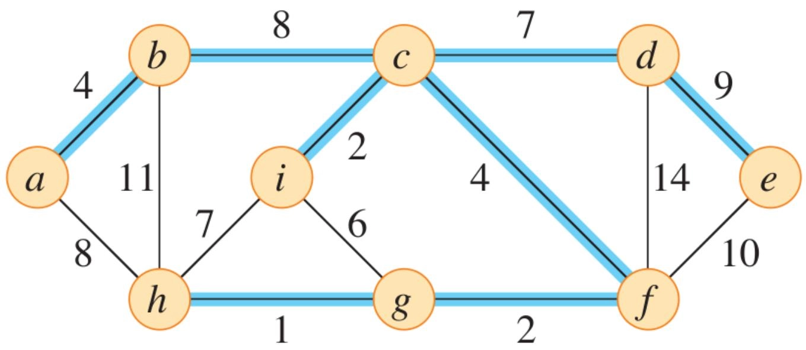
最小生成树通用算法 (MST
Generic Method)
Greedy
Intuition: grows the minimum spanning tree one edge at a
time（直觉：每次增长最小生成树的一条边）
select edges based on their weights and handle
cycles（根据权重选择边并处理环）
通用算法：
1 2 3 4 5 6
GENERIC-MST(G, w) A = ∅ # 初始化边集A为空 while A does not form a spanning tree find an edge (u, v) that is safe for A A = A ∪ {(u, v)} return A
How do you find a safe edge?
An edge \((u, v)\) is safe for a
set \(A\) of edges if \(A \cup \{(u, v)\}\) is also a subset of
some minimum spanning tree（如果 \(A \cup
\{(u, v)\}\) 也是某个最小生成树的子集，则边 \((u, v)\) 对于边集 \(A\) 是安全的）
To find a safe edge, we use the cut property of minimum spanning
trees（为了找到一条安全边，我们使用最小生成树的割属性）
安全边定理
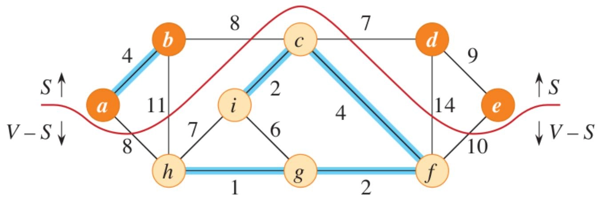
基本定义
A cut \((S, V - S)\) of an
undirected graph \(G(V, E)\) is a
partition of \(V\)（无向图 \(G(V, E)\) 的割 \((S, V - S)\) 是 \(V\) 的一个划分）
An edge \((u, v) \in E\)crosses the cut \((S, V -
S)\) if one of its endpoints belongs to \(S\) and the other belongs to \(V - S\)（如果边 \((u, v) \in E\) 的两个端点分别属于 \(S\) 和 \(V -
S\) ，则该边跨越割 \((S, V -
S)\)）
A cut respects a set \(A\) of edges if no edge in \(A\) crosses the cut（如果 \(A\) 中没有边跨越该割，则称该割尊重边集
\(A\) ）
An edge is a light edge crossing a cut if its
weight is the minimum of any edge crossing the
cut（如果一条边的权重是跨越该割的任何边的最小值，则该边是跨越该割的轻边）
安全边定理：Edge \((u,v)\) is safe for \(A\) if,
Let \(G(V, E)\) be a connected,
undirected graph with a real-valued weight function \(w\) defined on \(E\) ;（设 \(G(V,
E)\) 是一个连通的无向图，实值权重函数 \(w\) 定义在 \(E\) 上）
let \(A\) be a subset of \(E\) that is included in some minimum
spanning tree for \(G\) ;（设 \(A\) 是 \(E\) 的一个子集，包含在 \(G\) 的某个最小生成树中）
let \((S,V - S)\) be any cut of
\(G\) that respects \(A\) ;（设 \((S,V
- S)\) 是 \(G\) 的任意尊重 \(A\) 的割）
let \((u, v)\) be a light edge
crossing \((S, V - S)\),（令 \((u, v)\) 是跨越 \((S, V - S)\) 的轻边）
证明：
Assume \(T\) is a minimum spanning
tree (MST) that includes \(A\) and
\((u, v) \notin T\),（假设 \(T\) 是包含 \(A\) 的最小生成树，且 \((u, v) \notin T\)。）
We now construct another MST \(T^\prime\) that includes \(A \cup \{(u, v)\}\)（我们现在构造另一个包含
\(A \cup \{(u, v)\}\) 的最小生成树
\(T^\prime\)。）
At least one edge \((x, y)\) in
\(T\) in the path \(p\) crosses the cut \((S, V - S)\)（在路径 \(p\) 中，\(T\) 中至少有一条边 \((x, y)\) 跨越割 \((S, V - S)\)）
\(T^{\prime} = (T - \{(x,y)\})\cup
\{(u,v)\}\)
Since \(w(u,v)\leq w(x,y)\), we
have \(w(T^{\prime}) \leq w(T)\)（由于
\(w(u,v)\leq w(x,y)\) ，我们有 \(w(T^{\prime}) \leq w(T)\) ）
Since \(T\) is a minimum spanning
tree, we have \(w(T^{\prime}) =
w(T)\)（由于 \(T\)
是最小生成树，我们有 \(w(T^{\prime}) =
w(T)\) ）
Thus, \(T^{\prime}\) is also a
minimum spanning tree that contains \(A \cup
\{(u, v)\}\)（因此，\(T^{\prime}\) 也是最小生成树，且包含 \(A \cup \{(u, v)\}\)）
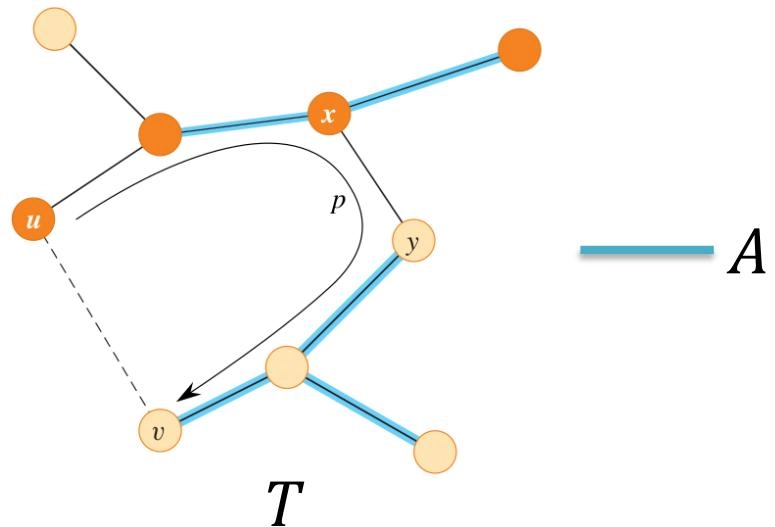
Prim 算法
概述
概述：
The edges in the set \(A\) always
form a single tree（边集 \(A\)
总是形成一棵单一的树）
The tree starts from an arbitrary root vertex \(r\) and grows until it spans all the
vertices in \(V\)（树从任意根节点 \(r\) 开始生长，直到覆盖 \(V\) 中的所有顶点）
Each step adds to the tree \(A\) an
edge that connects \(A\) to an
isolated vertex with the minimum weight（每一步向树
\(A\) 添加一条具有最小权重的边，将
\(A\) 连接到孤立顶点）
This rule adds only edges that are safe for \(A\) （该规则仅添加对 \(A\) 安全的边）
A greedy algorithm
示例： 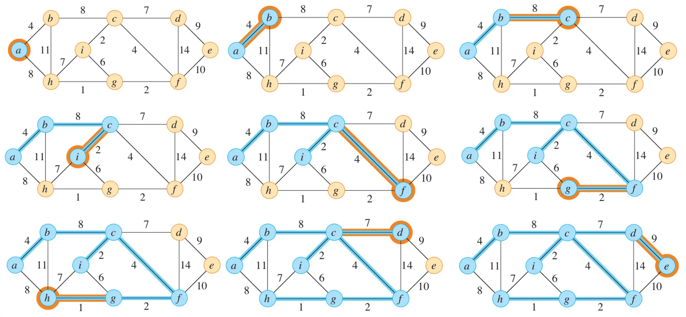
Maintain a min-priority queue \(Q\)
of all vertices that are not in the
tree（维护一个包含所有不在树中的顶点的最小优先队列 \(Q\) ）
The minimum weight of any edge connecting \(v\) to a vertex in the tree（连接 \(v\) 到树中顶点的任何边的最小权重）
算法伪代码
1 2 3 4 5 6 7 8 9 10 11 12 13 14 15
MST_PRIM(G, w, r) // Prim 最小生成树算法 for each u in G.V // 初始化所有顶点 u.key = ∞ u.parent = NIL r.key = 0 Q = ∅ for each u in G.V INSERT(Q, u) while Q is not empty u = EXTRACT-MIN(Q) // 从优先队列中提取最小 key 的顶点 u for each v in G.Adj[u] // 遍历 u 的所有邻接顶点 v if v in Q and w(u, v) < v.key // 如果 v 在队列中且边 (u, v) 的权重小于 v 的当前 key v.parent = u // 更新 v 的父节点为 u v.key = w(u, v) // 更新 v 的 key 为边 (u, v) 的权重 DECREASE-KEY(Q, v, v.key) // 按 key 下降更新优先队列 Q 中顶点 v 的位置
最小/最大优先队列
(Min/Max-Priority Queue)
定义
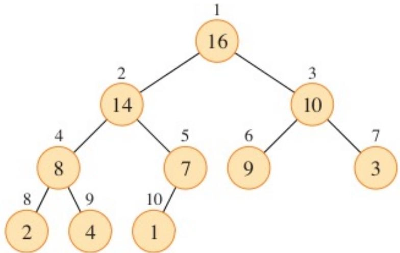
(Binary) heap: a nearly complete binary
tree（二叉堆：一个近似完全二叉树）
The value of a node is at most (at least) the value of its
parent（节点的值小于等于（大于等于）其父节点的值）
算法伪代码
Basic Heap Operations
1 2 3 4 5 6
PARENT(i) return floor(i / 2) // 返回节点 i 的父节点索引LEFT(i) return 2 * i // 返回节点 i 的左子节点索引RIGHT(i) return 2 * i + 1 // 返回节点 i 的右子节点索引
MAX-HEAPIFY(A, i) // 维护最大堆性质 l = LEFT(i) // 获取左子节点索引 r = RIGHT(i) // 获取右子节点索引 if l <= A.heap_size and A[l] > A[i] largest = l // 左子节点较大 else largest = i // 当前节点较大 if r <= A.heap_size and A[r] > A[largest] largest = r // 右子节点较大 if largest != i exchange A[i] with A[largest] // 交换当前节点与较大子节点 MAX-HEAPIFY(A, largest) // 递归调整子树
MAX-HEAP-INCREASE-KEY(A, x, k) // 把堆中元素 x 的值增加到 k if k < A[x].key error "new key is smaller than current key" A[x].key = k // 更新元素 x 的值为 k while x > 1 and A[PARENT(x)].key < A[x].key // 向上调整堆 exchange A[x] with A[PARENT(x)] // 交换当前节点与其父节点 x = PARENT(x) // 移动到父节点位置
Initially, \(|V|\) trees in the
forest（最初，森林中有 \(|V|\)
棵树）
Find a safe edge to add by finding, of all the
edges that connect any two trees in the forest, an edge
\((u, v)\) with the minimum
weight（通过在森林中连接任意两棵树的所有边中找到权重最小的边 \((u, v)\) 来找到一条安全边进行添加）
Repeat until there is only one tree（重复直到只有一棵树）
A greedy algorithm
示例 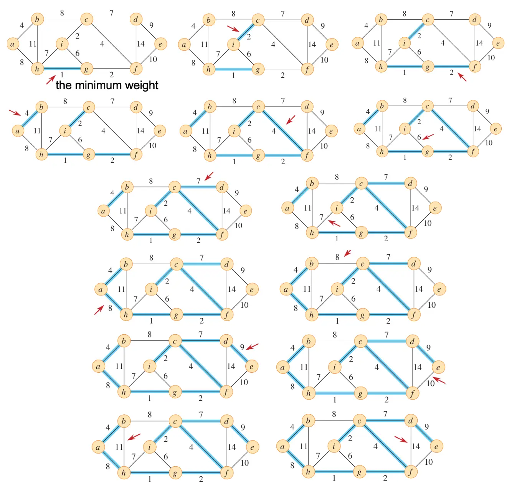
算法伪代码
1 2 3 4 5 6 7 8 9 10
MST_KRUSKAL(G, w) // Kruskal 最小生成树算法 A = ∅ // 初始化边集 A 为空 for each vertex v in G.V // 初始化每个顶点为单独的集合 MAKE-SET(v) edges = all edges in G.E sorted by weight // 按权重排序所有边 for each edge (u, v) in edges // 遍历排序后的边 if FIND-SET(u) ≠ FIND-SET(v) // 如果边 (u, v) 的两个端点属于不同集合 A = A ∪ {(u, v)} // 将边 (u, v) 添加到边集 A 中 UNION(u, v) // 合并两个集合 return A // 返回最小生成树的边集 A
不相交集数据结构
(Disjoint-set data structure)
Group \(n\) distinct elements into
a collection of disjoint sets（将 \(n\)
个不同的元素分组为不相交的集合）
with no elements in common（没有共同元素）
A collection of \(S = \{S_1, S_2, \ldots,
S_n\}\) of disjoint dynamic
sets（不相交动态集合的集合 \(S = \{S_1, S_2,
\ldots, S_n\}\) ）
To identify each set, choose a representative, which is some member
of the set（为了识别每个集合，选择一个代表，它是集合中的某个成员）
E.g., choosing the smallest member in the
set（例如，选择集合中最小的成员）
Three operations:
MAKE-SET(x): creates a new set whose only member is
\(x\)（创建一个新集合，其唯一成员是
\(x\) ）
Also the representative（也是集合的代表）
UNION(x, y): unites two disjoint, dynamic sets that
contain \(x\) and \(y\) into a new set that is the union of
these two sets（联合包含 \(x\) 和 \(y\)
的两个不相交的动态集合，形成一个新的集合，该集合是这两个集合的并集）
FIND-SET(x): returns a pointer to the representative of
the unique set containing \(x\)
（返回指向包含 \(x\)
的唯一集合的代表的指针）
There are \(n\)MAKE-SET operations and at most \(n - 1\)UNION operations（有
\(n\) 个 MAKE-SET 操作和最多 \(n - 1\) 个 UNION 操作）
不相交集森林 (Disjoint-set
forests)
A fast implementation of disjoint sets represents sets by
trees（不相交集的快速实现：通过树来表示集合）
Each tree represents one
set（每棵树代表一个集合）
Each member points only to its parent（每个成员只指向其父节点）
The root contains the representative（根节点包含代表）
Heuristic #1: union by rank（启发式方法＃1：按秩联合）
Rank: an upper bound on the height of the
node（秩：节点高度的上限）
The root with smaller rank points to the root with larger
rank（较小秩的根指向较大秩的根）
Heuristic #2: path compression（启发式方法＃2：路径压缩）
The FIND-SET procedure updates each node to point
directly to the root（FIND-SET 过程更新每个节点以直接指向根节点）
算法伪代码
Union by Rank
1 2 3 4 5 6 7 8 9 10
UNION(x, y) // 合并包含 x 和 y 的两个集合 LINK(FIND-SET(x), FIND-SET(y))LINK(x, y) // 按秩联合两个集合的根节点 x 和 y if x.rank > y.rank // 如果 x 的秩大于 y 的秩 y.p = x // y 指向 x else: x.p = y // 反之 x 指向 y，并更新秩 if x.rank == y.rank y.rank = y.rank + 1
UNION(c, f) 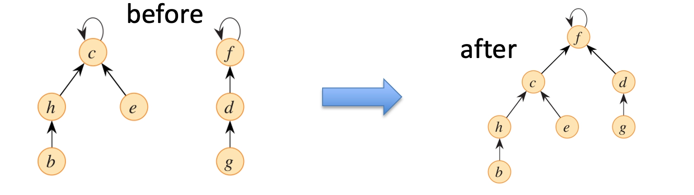
Path Compression
1 2 3 4 5 6 7 8
MAKE-SET(x) // 创建一个新集合，包含唯一成员 x x.p = x x.rank = 0 // 初始化秩为 0FIND-SET(x) if x != x.p // 如果 x 不是根节点 x.p = FIND-SET(x.p) // 更新父节点为树的根节点 return x.p // 返回集合的代表：根节点
FIND-SET(a) 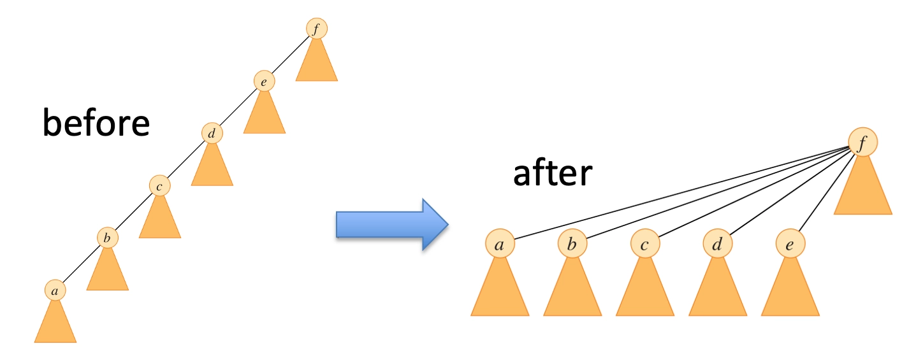
时间复杂度
The worst-case running time of the disjoint-set-forest: \(O(m\alpha(n))\)
\(n\) is the number of
elements（元素数量）
\(m\) is the total number of
operations（操作总数）
\(\alpha (n)\) is a very slowly
growing function（增长极慢的反阿克曼函数）
\(\alpha (n)\leq 4\) for all
practical purposes（在所有实际应用中，\(\alpha
(n)\) 不超过 4）
时间复杂度
The running time of Kruskal’s algorithm: \(O(E \log V)\)
MAKE-SET operations: \(O(V)\)
Sorting: \(O(E \log E) = O(E \log
V)\)
FIND-SET operations: \(O(E)\)
UNION operations: \(O(V)\)
The worst-case running time of the disjoint-set-forest: \(O\big ((E + V) \alpha (V) \big)\)
reversing the direction of each edge in the
graph（通过反转图中每条边的方向，将其转换为单源最短路径问题）
Single-pair shortest-path problem（单对最短路径问题）
a part of the single-source shortest-paths
problem（单源最短路径问题的一部分）
All-pairs shortest-paths problem（全源最短路径问题）
基本定义
A weighted, directed graph \(G(V,E)\)（加权有向图）
For each edge \((u, v) \in E\), a
weight \(w(u, v)\) specifies the cost
to connect \(u\) and \(v\)
\(w \colon E \to \mathbb{R}\)
mapping edges to real-valued weights（将边映射到实值权重）
The weight \(w(p)\) of path \(p = \langle v_0, v_1, \dots, v_k \rangle\)
is the sum of the weights of its constituent
edges（路径的权重是其组成边的权重之和） \[
w (p) = \sum_{1}^{k} w(v_{i - 1}, v_{i})
\]
The shortest-path weight from \(u\)
to \(v\) is（从 \(u\) 到 \(v\) 的最短路径权重是） \[
\delta (u, v) = \left\{ \begin{array}{ll}
\min \{w (p) \colon u \xrightarrow {p} v \} & \exists~p: u
\xrightarrow {p} v \\
\infty & \text{otherwise}
\end{array} \right.
\]
A shortest path from vertex \(u\)
to vertex \(v\) is then defined as any
path \(p\) with weight \(w(p) = \delta(u, v)\)(从顶点 \(u\) 到顶点 \(v\) 的最短路径被定义为权重为 \(w(p) = \delta(u, v)\) 的任何路径 \(p\) )
负权边与负权环
(Negative-weight edges and cycles)
A graph is well-defined if no negative-weight cycle reachable from
the source \(s\) exists（如果不存在从源
\(s\) 可达的负权环，则图是良定义的）
Not well-defined \(\rightarrow \delta
(u,v) = -\infty\)
Any shortest path contains at most \(|V| -
1\) edges（任何最短路径最多包含 \(|V| -
1\) 条边）
No positive-weight cycle
Dijkstra 算法
Solves the single-source shortest-paths problem for
a graph with nonnegative edge
weights（解决具有非负边权的图的单源最短路径问题）
a Greedy algorithm（贪心算法）
最优子结构
Let \(p = \langle v_0, v_1, \dots, v_k
\rangle\) be a shortest path from vertex \(v_0\) to vertex \(v_k\),（设 \(p\) 是从顶点 \(v_0\) 到顶点 \(v_k\) 的最短路径）
For any \(i\) and \(j\) such that \(0
\leq i \leq j \leq k\), let \(p_{ij} =
\left\langle v_i, v_{i+1}, \ldots, v_j \right\rangle\) be the
subpath of \(p\) from vertex \(v_i\) to vertex \(v_j\)（对于 \(0
\leq i \leq j \leq k\) 的任何 \(i\) 和 \(j\) ，设 \(p_{ij}\) 是从顶点 \(v_i\) 到顶点 \(v_j\) 的子路径）
Then \(p_{ij}\) is a shortest path
from \(v_i\) to \(v_j\),（则 \(p_{ij}\) 是从 \(v_i\) 到 \(v_j\) 的最短路径）
松弛 (Relaxation)
Relaxation is the process of continually decreasing the
shortest-path estimates by finding better
paths（松弛是通过寻找更好的路径不断降低最短路径估计值的过程）
Attribute \(v.d\) : a shortest-path
estimate（属性 \(v.d\)
：最短路径估计值）
An upper bound on the weight of a shortest path to \(v\)（到 \(v\) 的最短路径权重的上限）
Attribute \(v.\pi\): a
predecessor（属性 \(v.\pi\) ：前驱）
The chain of predecessors runs backward along a shortest
path（前驱链沿着最短路径向后运行）
The process of relaxing an edge \((u,
v)\) consists of testing whether going through vertex \(u\) improves the shortest path to vertex
\(v\)（松弛边 \((u, v)\) 的过程包括测试通过顶点 \(u\) 是否改善了到顶点 \(v\) 的最短路径）
算法伪代码:
1 2 3 4 5 6 7 8 9 10
INITIALIZE-SINGLE-SOURCE(G, s) // 单源初始化 for each vertex v in G.V v.d = ∞ v.pi = NIL s.d = 0RELAX(u, v, w) // 松弛操作，u 是起点，v 是终点，w 是权重函数 if v.d > u.d + w(u, v) v.d = u.d + w(u, v) v.pi = u
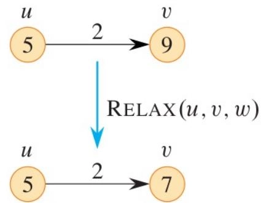
基本思路
Assume nonnegative weights on all edges（假设所有边的权重均为非负）
\[
\forall (u,v) \in E, w(u,v) \geq 0
\]
Generalizing breadth-first search (BFS) to weighted
graphs（将 BFS 泛化为加权图）
The algorithm maintains a set of vertices \(S\), whose final shortest-path weights have
already been determined（该算法维护一个顶点集 \(S\) ，其最终最短路径权重已确定）
主要步骤
Selects the vertex \(u \in V - S\)
with the minimum shortest-path estimate（从 \(V - S\) 中选择具有最小最短路径估计值的顶点
\(u\)）
Using a min-priority queue \(Q\)
instead of a FIFO queue（使用最小优先队列 \(Q\) 代替 FIFO 队列）
The key of each vertex \(v\) in
\(Q\) is the shortest-path estimate
\(v.d\) （队列中每个顶点 \(v\) 的键是最短路径估计值 \(v.d\) ）
Relaxes all edges leaving \(u\)（松弛 \(u\) 的所有出边）
Repeat the above procedure \(|V|\)
times（重复上述过程 \(|V|\) 次）
算法伪代码
1 2 3 4 5 6 7 8 9 10 11 12
DIJKSTRA(G, w, s) // G 是图，w 是权重函数，s 是源顶点 INITIALIZE-SINGLE-SOURCE(G, s) S = ∅ // 已确定最短路径权重的顶点集 Q = ∅ // 最小优先队列 for each vertex v in G.V // 将所有顶点插入最小优先队列 Q INSERT(Q, v) while Q ≠ ∅ u = EXTRACT-MIN(Q) // 从 Q 中提取具有最小 d 值的顶点 u S = S ∪ {u} // 将 u 添加到 S 中 for each vertex v in Adj[u] // 松弛 u 的所有出边 RELAX(u, v, w) return
Convergence property: if \(s
\xrightarrow{p} x \to y\) is a shortest path for some \(x, y \in V\), and if \(x.d = \delta(s, x)\) at any time prior to
relaxing edge \((x, y)\), then \(y.d = \delta(s, y)\) at all times
afterward（收敛性质：如果 \(s \xrightarrow{p}
x \to y\) 是某些 \(x, y \in V\)
的最短路径，并且如果在松弛边 \((x, y)\)
之前的任何时间 \(x.d = \delta(s, x)\)
，那么在之后的所有时间 \(y.d = \delta(s,
y)\) ）
after relaxing edge \((x, y)\), we
have \(y.d \leq x.d + w(x,y) = \delta(s,x) +
w(x,y) = \delta(s,y)\)
We prove that at the start of each iteration \(v.d = \delta(s,v)\) for all \(v\in
S\)（我们证明在每次迭代开始时，对于所有 \(v\in S\) ，都有 \(v.d = \delta(s,v)\) ）
Proof by induction
In each iteration, the algorithm adds \(u\) into \(S\)（在每次迭代中，算法将 \(u\) 添加到 \(S\) ）
we prove that \(u.d =
\delta(s,u)\)（我们证明 \(u.d =
\delta(s,u)\) ）
Let \(y\) be the first vertex on a
shortest path from \(s\) to \(u\) that is not in \(S\)（设 \(y\) 是从 \(s\) 到 \(u\) 的最短路径上第一个不在 \(S\) 中的顶点）
Thus, \(\delta (s,y)\leq \delta
(s,u)\)
Also, \(\delta (s,u)\leq u.d\) and
\(u.d\leq y.d\)
because we add \(u\)
\(\delta (s,y)\leq \delta (s,u)\leq
u.d\leq y.d\)
Edge \((x, y)\) was relaxed when
\(x\) was added（当 \(x\) 被添加时，边 \((x, y)\) 被松弛）
Convergence property: if \(s
\xrightarrow{p} x \to y\) is a shortest path for some \(x, y \in V\), and if \(x.d = \delta(s, x)\) at any time prior to
relaxing edge \((x, y)\), then \(y.d = \delta(s, y)\) at all times afterward
Since \(\delta (s,y)\leq \delta (s,u)\leq
u.d\leq y.d\) and \(y.d \leq \delta
(s,y)\)
\(\delta (s,y) = \delta (s,u) = u.d =
y.d\)
时间复杂度
The algorithm calls both INSERT and
EXTRACT-MIN once per vertex（算法对每个顶点调用 INSERT 和
EXTRACT-MIN）
INSERT and EXTRACT-MIN operations: \(|V|\) times
Each edge in the adjacency list \(Adj[u]\) is examined and relaxed once.
Thus, the algorithm calls RELAX\(|E|\) times, which may lead to calls to
DECREASE-KEY（邻接表 \(Adj[u]\)
中的每条边都被检查和松弛一次。因此，算法调用 RELAX \(|E|\) 次，这可能会导致调用 DECREASE-KEY）
DECREASE-KEY: \(O(|E|)\) times
Simple implementation of min-priority queue \(Q\)（最小优先队列 \(Q\) 的简单实现）
Store \(v.d\) in the \(v\) th entry of an array（将 \(v.d\) 存储在数组的第 \(v\) 个条目中）
\(T(n) = O(V^{2})\)
\(O(1)\) time for each
INSERT and DECREASE-KEY operation: \(O(|V|+|E|)\)
\(O(V)\) time for each
EXTRACT-MIN operation: \(O(V^{2})\)
Binary min-heap implementation of min-priority
queue（最小优先队列的二进制最小堆实现）
\(O(\log V)\) time for each
INSERT, EXTRACT-MIN and
DECREASE-KEY operation: \(O((|V|+|E|)\log V)\)
Floyd-Warshall 算法
Can we solve an all-pairs shortest-paths problem by running
Dijkstra’s algorithm \(|V|\)
times?（我们能否通过运行 Dijkstra 算法 \(|V|\) 次来解决全源最短路径问题？）
Yes
\(O(V^3)\) if implementing the
min-priority queue with a linear
array（使用线性数组实现最小优先队列的时间复杂度）
\(O(V^2 \log V + VE \log V)\) if
implementing the min-priority queue with a binary
min-heap（使用二进制最小堆实现最小优先队列的时间复杂度）
Use Floyd-Warshall algorithm to solve the all-pairs
shortest-paths problem（使用 Floyd-Warshall
算法解决全源最短路径问题）
Negative-weight edges may be present（允许负权边）
But no negative-weight cycle exists（不允许负权环）
a Dynamic programming algorithm（动态规划算法）
基本思路
Dynamic programming: the algorithm considers shortest paths from
\(i\) to \(j\) with all intermediate vertices in the
set \(\{1,2,\ldots,k\}\)（动态规划：该算法考虑从
\(i\) 到 \(j\) 的所有中间顶点在集合 \(\{1,2,\ldots,k\}\) 中的最短路径）
If \(k\) is not an intermediate
vertex, then all intermediate vertices belong to the set \(\{1,2,\ldots,k-1\}\)（如果 \(k\) 不是中间顶点，则所有中间顶点属于集合
\(\{1,2,\ldots,k-1\}\) ）
If \(k\) is an intermediate vertex,
then decompose the path into \(i
\xrightarrow{p_1} k \xrightarrow{p_2} j\)（如果 \(k\) 是中间顶点，则将路径分解为 \(i \xrightarrow{p_1} k \xrightarrow{p_2} j\)
）
\(p_1\) is a shortest path from
\(i\) to \(k\)
\(p_2\) is a shortest path from
\(k\) to \(j\)
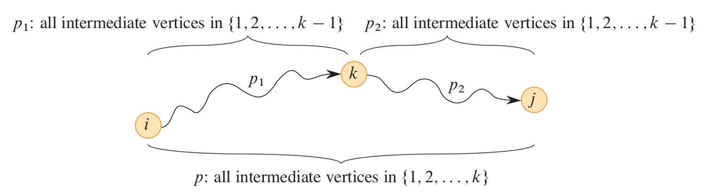
最优子结构
\(d_{ij}^{(k)}\) : the weight of a
shortest path from vertex \(i\) to
vertex \(j\) for which all intermediate
vertices belong to the set \(\{1,2,\ldots,k\}\)（从顶点 \(i\) 到顶点 \(j\)
的最短路径的权重，其中所有中间顶点属于集合 \(\{1,2,\ldots,k\}\) ） \[
d_{ij}^{(k)} = \left\{ \begin{array}{ll}
w_{ij} & k = 0 \\
\min \{d_{ij}^{(k - 1)},d_{ik}^{(k - 1)} + d_{kj}^{(k - 1)}\} &
k\geq 1
\end{array} \right.
\]
Final answer: \(D^{(n)} =
(d_{ij}^{(n)})\)
算法伪代码
The bottom-up procedure（自底向上过程）
1 2 3 4 5 6 7 8
FLOYD-WARSHALL(W, n) // W 是权重矩阵，n 是顶点数 let D^(0) = W // 初始化 D^(0) for k = 1 to n let D^(k) be a new n x n matrix for i = 1 to n for j = 1 to n D_ij^(k) = min{D_ij^(k - 1), D_ik^(k - 1) + D_kj^(k - 1)} return D^(n) // 返回最终结果
\[
T(n) = \Theta (n^3)
\]
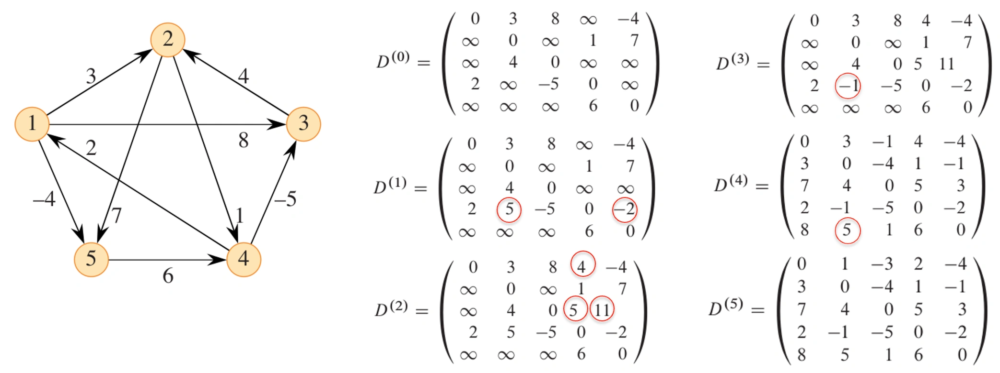
构造最短路径
Construct the predecessor matrix\(\Pi\)（构造前驱矩阵 \(\Pi\) ）
\(\pi_{ij}^{(k)}\) : the
predecessor of vertex \(j\) on a
shortest path from vertex \(i\) to
vertex \(j\) for which all intermediate
vertices belong to the set \(\{1,2,\ldots,k\}\)（从顶点 \(i\) 到顶点 \(j\) 的最短路径上顶点 \(j\) 的前驱，其中所有中间顶点属于集合 \(\{1,2,\ldots,k\}\) ）
FLOYD-WARSHALL-MODIFIED(W, n) // W 是权重矩阵，n 是顶点数 let D^(0) = W // 初始化 D^(0) let Π^(0) = n x n matrix // 初始化前驱矩阵 Π^(0) for i = 1 to n for j = 1 to n if i = j or w_ij = ∞ π_ij^(0) = NIL else π_ij^(0) = i for k = 1 to n let D^(k) be a new n x n matrix let Π^(k) be a new n x n matrix for i = 1 to n for j = 1 to n if D_ij^(k - 1) ≤ D_ik^(k - 1) + D_kj^(k - 1) D_ij^(k) = D_ij^(k - 1) π_ij^(k) = π_ij^(k - 1) else D_ij^(k) = D_ik^(k - 1) + D_kj^(k - 1) π_ij^(k) = π_kj^(k - 1) return D^(n), Π^(n) // 返回最终结果PRINT-PATH(Π, i, j) // 打印从 i 到 j 的最短路径 if i == j print i else if π_ij == NIL print "no path from" i "to" j "exists" else PRINT-PATH(Π, i, π_ij) print j
分布式算法
分布式计算 (Distributed
Computation)
进程 (Processes)
Abstract clusters, physical/virtual machines, processors, cores,
threads, etc. as
processes（将集群、物理/虚拟机、处理器、内核、线程等抽象为进程）
We assume (unless stated otherwise):
Finite set of processes（有限的进程集）
the set of processes in the system is denoted by \(\Pi\), where \(N
= |\Pi|\)（系统中的进程集表示为 \(\Pi\) ，其中 \(N
= |\Pi|\) ）
each process is modeled as a state
machine（每个进程都被建模为一个状态机）
covers most scenarios (except permissionless settings such as
Bitcoin)（涵盖大多数场景（除比特币等无权限设置外））
Processes have unique identities and know each
other（进程具有唯一标识符并相互了解）
Pairs of processes are connected by a link (or channel)through which
the processes exchange
messages（进程对通过链接（或通道）连接，通过该链接（或通道）交换消息）
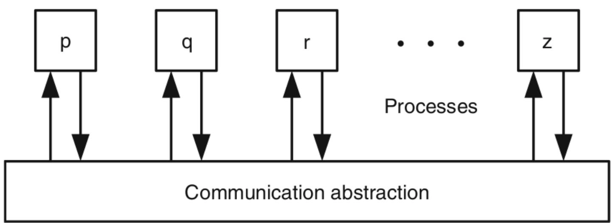
Processes and communication
本地步骤 (Local steps)
Process \(p_i\) computation
proceeds in steps（进程 \(p_i\)
的计算按步骤进行）
Send event: put a message in \(\mathrm{outbuf}_i[j]\), for every neighbor
\(p_j\)（发送事件：将消息放入 \(\mathrm{outbuf}_i[j]\)，对于每个邻居 \(p_j\) ）
Receive event: get messages m from \(\mathrm{inbuf}_i[*]\)（接收事件：从 \(\mathrm{inbuf}_i[*]\) 中获取消息 m）
Computation event: Perform local computation \(\rightarrow\) Change
state（计算事件：执行本地计算 \(\rightarrow\) 更改状态）
Local state changes from current state S to new state \(S^{\prime}\) as \(S^{\prime} = f(S, m)\)（本地状态从当前状态
S 更改为新状态 \(S^{\prime} = f(S, m)\)
） 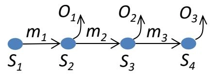
消息传递 (Message passing)
\(\mathrm{Inbuf}_i[j]\)
Holds messages sent by \(p_j\)
delivered to (but not processed by) \(p_i\)（保存由 \(p_j\) 发送并交付给 \(p_i\)，且 \(p_i\) 未处理的消息）
\(\mathrm{Outbuf}_i[j]\)
Holds messages sent by \(p_i\) not
delivered to \(p_j\)（保存由 \(p_i\) 发送但尚未未交付给 \(p_j\) 的消息）
Message \(m\) sent by \(p_i\) to \(p_j\):
First in \(\mathrm{Outbuf}_i[j]\)
Upon delivery, in \(\mathrm{Inbuf}_j[i]\)
执行和配置 (Executions
and configurations)
The execution of a distributed algorithm is represented by a
sequence of steps executed by the
processes.（分布式算法的执行由进程执行的一系列步骤表示。）
Configuration \(C\) is a vector of
individual process states（配置 \(C\)
是各个进程状态的向量） \[
C = \left(S^{1}, S^{2}, \dots S^{n}\right)
\]
The execution captures the evolution of the global
state（执行捕获全局状态的演变） \[
C_0 \xrightarrow{s_1} C_1 \xrightarrow{s_2} C_2 \xrightarrow{s_3} C_3
\cdots
\]
\(s_k\) is a step taken by some
process（其中 \(s_k\)
是某个进程采取的步骤）
A configuration is a global state（配置是全局状态）
Not accessible to processes!（进程无法访问！）
We need it for reasoning about
algorithms（我们需要它来推理算法）
进程的步骤和分层
(Step of a process and layering)
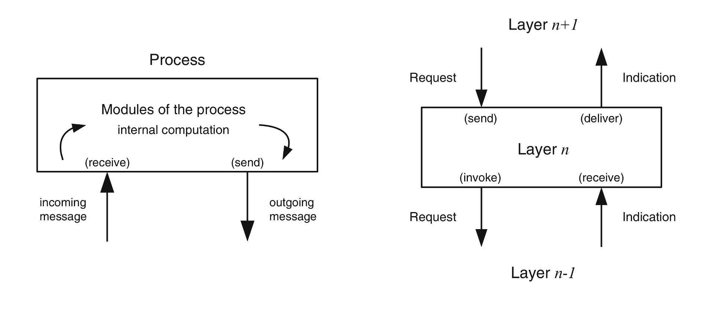
分布式算法栈
(Distributed Algorithm Stack)
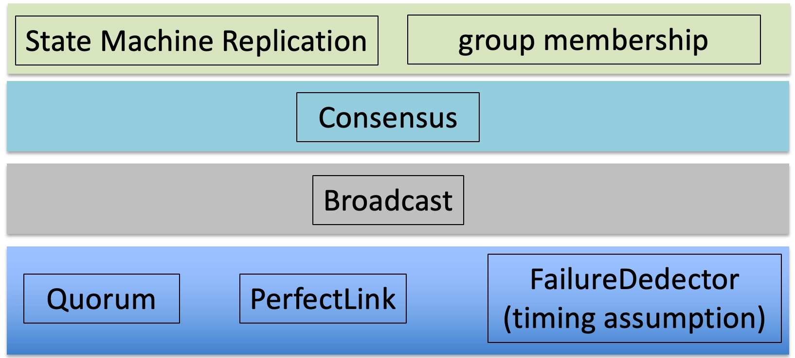
任务处理器 (Job Handlers)
规范
Name: JobHandler, instance \(jh\).
Request: <jh, Submit | job>: Requests a job to be
processed.（请求处理作业）
Indication: <jh, Confirm | job>: Confirms that
the given job has been (or will be)
processed.（确认给定的作业已被（或将被）处理）
Think of indication as a callback
function（可以将指示视为回调函数）
Properties:
JH1. Guaranteed response: Every submitted job is
eventually confirmed.（保证响应：每个提交的作业最终都会得到确认。）
算法：同步作业处理程序
(Synchronous JobHandler)
Implements: JobHandler, instance \(jh\).
Get familiar with the event-driven style（熟悉事件驱动风格）
1 2 3
upon event <jh, Submit | job> do process (job); trigger <jh, Confirm | job>;
算法：异步作业处理程序
(Asynchronous JobHandler)
Implements: JobHandler, instance \(jh\).
1 2 3 4 5 6 7 8 9 10 11
upon event <jh, Init> do buffer := ∅;upon event <jh, Submit | job> do buffer := buffer ∪ {job}; trigger <jh, Confirm | job>;upon buffer ≠ ∅ do job := select job(buffer); process (job); buffer := buffer \ {job};
故障 (Failures)
进程故障 (Process Failures)
A failure occurs when a process does not behave according to the
algorithm（当进程未按照算法运行时，就会发生故障）
A process that does not fail is called
correct（未发生故障的进程称为正确进程）
A process that fails is called
faulty（发生故障的进程称为故障进程）
Faulty processes:
Crash (crash-stop)（崩溃）
Process stops execution of the algorithm:
crashes（进程停止算法的执行：崩溃）
Process may crash in the middle of a step. Notably, of a send
event（进程可能在步骤中间崩溃。特别是发送事件）
Crash-recovery（崩溃恢复）
Process might temporarily crash, but then recover its state and
proceed taking
steps（进程可能会暂时崩溃，但随后恢复其状态并继续采取步骤）
Process may crash and recover for an infinite number of
times（进程可能会无限次崩溃并恢复）
Omission（遗漏）
The process omits to send/receive messages it is supposed to
send/receive（进程省略了它应该发送/接收的消息）
Due to, e.g., buffer overflows or network
congestion（例如，由于缓冲区溢出或网络拥塞）
Request: <fll, Send | q, m >: Requests to send
message \(m\) to process \(q\).（请求将消息 \(m\) 发送到进程 \(q\)）
Indication: <fll, Deliver | p, m >: Delivers
message \(m\) sent by process \(p\).（交付由进程 \(p\) 发送的消息 \(m\)）
Properties:
FLL1. Fair-loss: If a correct process \(p\) infinitely often sends a message \(m\) to a correct process \(q\), then \(q\) delivers \(m\) an infinite number of
times.（公平丢弃：如果正确进程 \(p\)
无限次地将消息 \(m\) 发送到正确进程
\(q\) ，则 \(q\) 无限次地交付 \(m\) 。）
FLL2. Finite duplication: If a correct process
\(p\) sends a message \(m\) a finite number of times to process
\(q\), then \(m\) cannot be delivered an infinite number
of times by \(q\),（有限重复：如果正确进程 \(p\) 将消息 \(m\) 有限次地发送到进程 \(q\) ，则 \(m\) 不能被 \(q\) 无限次地交付。）
FLL3. No creation: If some process \(q\) delivers a message \(m\) with sender \(p\) then \(m\) was previously sent to \(q\) by process \(p\).（无创建：如果某个进程 \(q\) 交付了带有发送者 \(p\) 的消息 \(m\) ，则该消息 \(m\) 先前已由进程 \(p\) 发送给 \(q\) 。）
Correspond to UDP（对应于 UDP）
顽固链路 (Stubborn links)
规范
Name: StubbornPointToPointLinks, instance \(sl\).
Request: <sl, Send | q, m>: Requests to send
message \(m\) to process \(q\).（请求将消息 \(m\) 发送到进程 \(q\)）
Indication: <sl, Deliver | p, m>: Delivers
message \(m\) sent by process \(p\).（交付由进程 \(p\) 发送的消息 \(m\)）
Properties:
SL1. Stubborn delivery: If a correct process \(p\) sends a message \(m\) once to a correct process \(q\), then \(q\) delivers \(m\) an infinite number of
times.（顽固交付：如果正确进程 \(p\)
向正确进程 \(q\) 发送一次消息 \(m\) ，则 \(q\) 无限次地交付 \(m\)。）
SL2. No creation: If some process \(q\) delivers a message \(m\) with sender \(p\), then \(m\) was previously sent to \(q\) by process \(p\).（无创建：如果某个进程 \(q\) 交付了 \(p\) 发送的消息 \(m\)，则该消息 \(m\) 先前已由进程 \(p\) 发送给 \(q\)。）
I.e., retransmission mechanism（即，重传机制）
算法：无限重传 (Retransmit
Forever)
Implemented: StubbornLink, instance \(sl\).
Uses: FairLossLink, instance \(fll\).
1 2 3 4 5 6 7 8 9 10 11 12 13 14 15 16 17 18 19
// 初始化 sl，sent 保存已发送但可能未被接收的消息（以备重传），设置定时器 △upon event <sl, Init> do sent := ∅; starttimer(△);// 定时器到期时，重传所有已发送的消息upon event <Timeout> do forall (q, m) ∈ sent do trigger <fll, Send | q, m>; starttimer(△);// 发送消息时，使用下层 fll 发送，并将消息加入 sent 集合以备重传upon event <sl, Send | q, m> do trigger <fll, Send | q, m>; sent := sent ∪ {(q, m)};// 当下层 fll 交付消息时，sl 也直接交付该消息upon event <fll, Deliver | p, m> do trigger <sl, Deliver | p, m>;
可靠链路 (Perfect/Reliable
links)
规范
Name: PerfectPointToPointLinks, instance \(pl\).
Request: <pl, Send | q, m>: Requests to send
message \(m\) to process \(q\).（请求将消息 \(m\) 发送到进程 \(q\)）
Indication: <pl, Deliver | p, m>: Delivers
message \(m\) sent by process \(p\).（交付由进程 \(p\) 发送的消息 \(m\)）
Properties:
PL1. Reliable delivery: If a correct process \(p\) sends a message \(m\) to a correct process \(q\), then \(q\) eventually delivers \(m\).（可靠交付：如果正确进程 \(p\) 向正确进程 \(q\) 发送消息 \(m\)，则 \(q\) 最终会交付 \(m\) 。）
PL2. No duplication: No message is delivered by a
process more than once.（无重复：进程不会多次交付同一条消息。）
PL3. No creation: If some process \(q\) delivers a message \(m\) with sender \(p\), then \(m\) was previously sent to \(q\) by process \(p\).（无创建：如果某个进程 \(q\) 交付了 \(p\) 发送的消息 \(m\)，则该消息 \(m\) 先前已由进程 \(p\) 发送给 \(q\) 。）
Whether or not we can make any assumption about time bounds
on（我们是否可以对以下内容做出任何时间界限的假设）
communication delays（通信延迟）
process speeds（进程速度）
clock drifts（时钟漂移）
同步消息传递
(Synchronous message passing)
Stronger model, makes timing assumptions（更强的模型，做出时间假设）
Propagation delays（传播延迟）
there is a known upper bound limit \(\Delta_{delay}\) on the time it takes for a
message to be delivered（消息交付所需时间有一个已知的上限）
Process speed（进程速度）
the time it takes to execute a step is bounded and known, say \(\Delta_{proc}\)（执行一个步骤所需的时间是有界且已知的）
Clocks（时钟）
the drift \(\Delta_{drift}\)
between a local clock and the global real time clock is bounded and
known（本地时钟与全球实时时钟之间的漂移是有界且已知的）
the global real time clock is a fictional
device（全球实时时钟是一个虚构的设备）
Simplifies communication model（简化通信模型）
Rounds: \(\Delta_{delay} + \Delta_{proc} +
\Delta_{drift}\) per round
In every round, every process executes one step (send, receive,
compute)（在每一轮中，每个进程执行一个步骤（发送、接收、计算）） 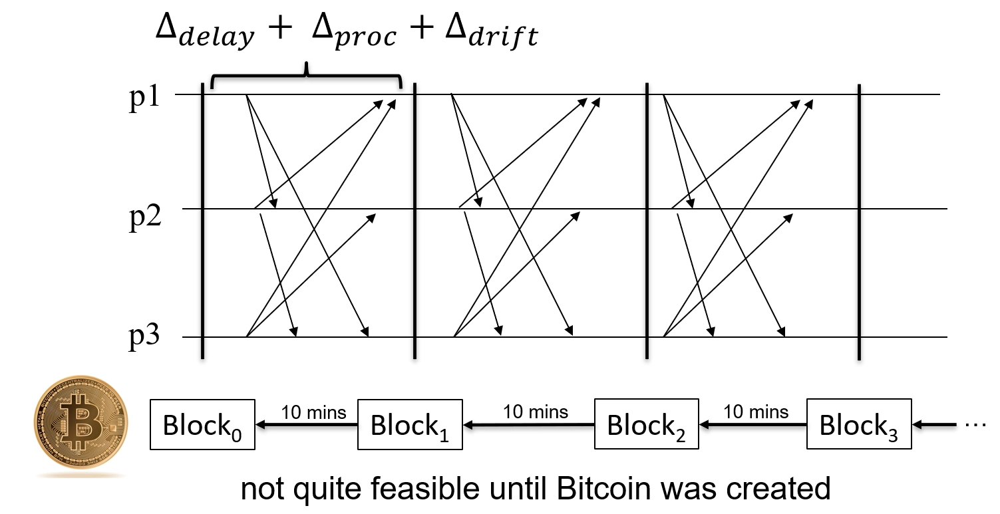
异步消息传递
(Asynchronous message passing)
Much simpler, no timing assumptions（进一步简化，无时间假设）
messages can be delayed arbitrarily
long（消息可以被任意长时间延迟）
processes can be arbitrarily slow or fast（进程可以任意慢或快）
clocks can drift arbitrarily（时钟可以任意漂移）
最终同步消息传递
(Eventually synchronous message passing)
Eventually synchronous: models “in
between”（最终同步： 模型“介于两者之间”）
In practice, distributed systems are synchronous most of the
time（在实践中，分布式系统大部分时间是同步的）
Formally, propagation delay \((\Delta_{delay})\) and process speed \((\Delta_{proc})\) are bounded after some
unknown
time（正式地说，在某个未知时间之后，传播延迟和进程速度是有界的）
\(\Delta = \Delta_{delay} +
\Delta_{proc}\)
Or, \(\Delta\) is not known a
priori（或者 \(\Delta\) 事先未知）
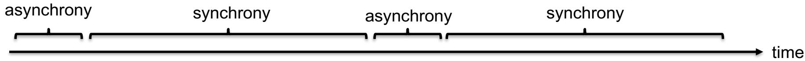
故障检测器 (Failure detectors,
FDs)
When a process in a distributed system fails (say crashes), how can
we tell?（当分布式系统中的进程发生故障（例如崩溃）时，我们如何判断？）
Asynchronous message passing（异步消息传递）
detecting a process failure (with the help of timing assumptions) is
unreliable!（在异步消息传递中，借助时间假设检测进程故障是不可靠的！）
Synchronous message passing（同步消息传递）
detecting a process failure is reliable（检测进程故障是可靠的）
Failure detectors (FDs)（故障检测器）
Provide processes with information about crashed
processes（为进程提供有关崩溃进程的信息）
Implemented using (or encapsulating) timing
assumptions（使用（或封装）时间假设实现）
Depending on the timing assumptions, the output of a FD can be
accurate or not（根据时间假设，FD 的输出可以是准确的也可以是不准确的）
FDs often give “hints” about failures rather than reliable
information（FDs 通常提供有关故障的“提示”，而不是可靠的信息）
Unreliable FDs（不可靠的 FD）
故障检测器 (Failure detector)
Indication: <P, Crash | p>: Detects that process
\(p\) has crashed.（检测进程 \(p\) 已崩溃）
Properties:
Completeness（完备性）
Accuracy（准确性）
完美故障检测器 (Perfect
failure detector)
规范
Name: PerfectFailureDetector, instance \(P\).
Indication: <P, Crash | p>: Detects that process
\(p\) has crashed.（检测进程 \(p\) 已崩溃）
Properties:
PFD1. Strong completeness: Eventually, every
process that crashes is permanently detected by every correct
process.（强完备性：最终，每个崩溃的进程都会被每个正确进程永久检测到。）
PFD2. Strong accuracy: If a process \(p\) is detected by any process, then \(p\) has crashed.（强准确性：如果进程 \(p\) 被任何进程检测到，则 \(p\) 已崩溃。）
Identifies one process that has not
failed（识别一个未发生故障的进程）
Each process eventually elects itself as the leader or a follower,
such that there is exactly one
leader（每个进程最终选举自己为领导者或追随者，以确保只有一个领导者）
优点
Synchronization/coordination tasks become much
simpler（同步/协调任务变得简单得多）
We can use the leader to “centralize” the
algorithm（我们可以使用领导者来“集中”算法）
Data processing, Resource allocation,
Scheduling（数据处理、资源分配、调度）
Coordinating consensus（协调共识）
缺点
Stability?: Leader fails \(\rightarrow\) must reelect
one（稳定性：领导者失败则必须重新选举一个）
Bottleneck（瓶颈）
领导者选举 (Leader election)
规范
Name: LeaderElection, instance \(le\).
Indication: <le, Leader | p>: indicates that
process \(p\) is elected as
leader.（表示进程 \(p\)
被选为领导者）
Properties:
LE1. Eventual detection: either there is no correct
process, or some correct process is eventually elected as the
leader.（最终检测：要么没有正确进程，要么某个正确进程最终被选为领导者。）
LE2. Accuracy: If a process is leader, then all
previously elected leaders have
crashed.（准确性：如果一个进程是领导者，则所有先前选举的领导者都已崩溃。）
A process sends a message within a group of processes \(\Pi\), such that processes in \(\Pi\) agree on the messages they
deliver（一个进程在一组进程 \(\Pi\)
中发送消息，使得 \(\Pi\)
中的进程对它们交付的消息达成一致）
Request: <beb, Broadcast | m>: Broadcasts a
message \(m\) to all
processes.（广播消息 \(m\)
给所有进程）
Indication: <beb, Deliver | p, m>: Delivers a
message \(m\) broadcast by process
\(p\).（交付由进程 \(p\) 广播的消息 \(m\)）
Properties:
BEB1. Validity: If a correct
process broadcasts a message \(m\),
then every correct process eventually delivers \(m\).（有效性：如果一个正确的进程广播消息
\(m\)，那么每个正确的进程最终都会交付
\(m\)。）
BEB2. No duplication: No message is delivered more
than once.（无重复：没有消息会被交付多次。）
BEB3. No creation: If a process delivers a message
\(m\) with sender \(s\), then \(m\) was previously broadcast by process
\(s\).（无创建：如果一个进程交付了一个由发送者
\(s\) 发送的消息 \(m\)，那么 \(m\) 之前是由进程 \(s\) 广播的。）
// 使用 beb 进行广播时，用 pl 向所有进程发送消息 mupon event <beb, Broadcast | m> do forall p in Π do trigger <pl, Send | p, m>;// 当 pl 交付消息 m 时，触发 beb 的交付事件upon event <pl, Deliver | p, m> do trigger <beb, Deliver | p, m>;
Correctness
The no creation and no duplication properties follow directly from
the corresponding properties of perfect
links.（无创建和无重复属性直接来自完美链接的相应属性。）
Validity is derived from the reliable delivery property and the fact
that the sender sends the message to every other
process.（有效性源自可靠交付属性以及发送者向每个其他进程发送消息的事实。）
Complexity
A single communication step, \(O(N)\) messages.（单个通信步骤，\(O(N)\) 消息。）
常规可靠广播 (Regular
Reliable Broadcast)
规范
Name: ReliableBroadcast, instance \(rb\).
Request: <rb, Broadcast | m>: Broadcasts a
message \(m\) to all
processes.（广播消息 \(m\)
给所有进程）
Indication: <rb, Deliver | p, m>: Delivers a
message \(m\) broadcast by process
\(p\).（交付由进程 \(p\) 广播的消息 \(m\)）
Properties:
RB1 - RB3: Same as properties BEB1 - BEB3 in best-effort
broadcast.
RB1. Validity: If a correct process broadcasts a message \(m\), then every correct process eventually
delivers \(m\).（有效性：如果一个正确的进程广播消息
\(m\)，那么每个正确的进程最终都会交付
\(m\)。）
RB2. No duplication: No message is delivered more than
once.（无重复：没有消息会被交付多次。）
RB3. No creation: If a process delivers a message \(m\) with sender \(s\), then \(m\) was previously broadcast by process
\(s\).（无创建：如果一个进程交付了由发送者
\(s\) 发送的消息 \(m\)，那么 \(m\) 之前是由进程 \(s\) 广播的。）
RB4. Agreement: If a message \(m\) is delivered by some
correct process, then \(m\) is eventually delivered by
every correct
process.（一致性：如果某个正确的进程交付了消息 \(m\)，那么每个正确的进程最终都会交付 \(m\)。）
A single communication step and \(O(N^{2})\) messages（单个通信步骤和 \(O(N^{2})\) 消息）
Worst case: the processes crash in sequence（进程按顺序崩溃）
\(O(N)\) steps and \(O(N^{2})\) messages（\(O(N)\) 步骤和 \(O(N^{2})\) 消息）
统一可靠广播 (Uniform
reliable broadcast)
规范
Name: UniformReliableBroadcast, instance \(urb\).
Request: <urb, Broadcast | m>: Broadcasts a
message \(m\) to all
processes.（广播消息 \(m\)
给所有进程）
Indication: <urb, Deliver | p, m>: Delivers a
message \(m\) broadcast by process
\(p\).（交付由进程 \(p\) 广播的消息 \(m\)）
Properties:
URB1 - URB3: Same as properties RB1 - RB3 in (regular) reliable
broadcast.
URB1. Validity: If a correct process broadcasts a message \(m\), then every correct process eventually
delivers \(m\).（有效性：如果一个正确的进程广播消息
\(m\)，那么每个正确的进程最终都会交付
\(m\)。）
URB2. No duplication: No message is delivered more than
once.（无重复：没有消息会被交付多次。）
URB3. No creation: If a process delivers a message \(m\) with sender \(s\), then \(m\) was previously broadcast by process
\(s\).（无创建：如果一个进程交付了由发送者
\(s\) 发送的消息 \(m\)，那么 \(m\) 之前是由进程 \(s\) 广播的。）
URB4: Uniform agreement: If a message \(m\) is delivered by some process
(whether correct or faulty), then \(m\) is eventually delivered by every
correct
process.（统一一致性：如果某个进程（无论是正确的还是错误的）交付了消息
\(m\)，那么每个正确的进程最终都会交付
\(m\)。）
Every correct process receives a DATA
message（每个正确的进程都会接收到一个 DATA 消息）
Every correct process broadcasts a DATA
message（每个正确的进程都会广播一个 DATA 消息）
Every correct process receives more than N/2 DATA
messages（每个正确的进程都会接收到超过 N/2 个 DATA 消息）
Since a majority of processes are
correct（因为大多数进程是正确的）
Every correct process eventually delivers \(m\)（每个正确的进程最终都会交付消息 \(m\)）
No duplication, no
creation（无重复，无创建）
Straightforward from the properties of best-effort
broadcast（直接来自尽力广播的属性）
Uniform agreement（统一一致性）
Assume \(N = 2f + 1\)（假设共有
\(N = 2f + 1\) 个进程）
Suppose a process \(p_1\)
urb-delivers \(m\), that means \(p_1\) has received at least \(f + 1\) DATA messages for \(m\)（假设一个进程 \(p_1\) 用 urb 交付了消息 \(m\)，这意味着 \(p_1\) 至少收到了 \(f + 1\) 个关于消息 \(m\) 的 DATA 消息）
Since there are at most \(f\)
faulty processes, at least one of these messages is from a correct
process \(p_2\)（由于最多有 \(f\)
个故障进程，这些消息中至少有一个来自正确的进程 \(p_2\)）
So all correct processes will receive the DATA message from \(p_2\) and broadcast
it（因此所有正确的进程都会收到来自 \(p_2\) 的 DATA 消息并进行广播）
Thus, every correct process will receive at least \(f + 1\) DATA messages for \(m\) and urb-deliver \(m\)（因此，每个正确的进程都会收到至少 \(f + 1\) 个关于消息 \(m\) 的 DATA 消息并用 urb 交付消息 \(m\)）
Complexity
Best case
two communication steps and \(O(N^{2})\) messages（两个通信步骤和 \(O(N^{2})\) 消息）
Worst case
\(O(N)\) steps and \(O(N^{2})\) messages（\(O(N)\) 步骤和 \(O(N^{2})\) 消息）
全序广播 (Total Order
Broadcast)
规范
Name: TotalOrderBroadcast, instance \(tob\).
Request: <tob, Broadcast | m>: Broadcasts a
message \(m\) to all processes.（将消息
\(m\) 广播给所有进程）
Indication: <tob, Deliver | p, m>: Delivers a
message \(m\) broadcast by process
\(p\).（交付由进程 \(p\) 广播的消息 \(m\)）
Properties:
TOB1. Validity: If a correct process \(p\) broadcasts a message \(m\), then \(p\) eventually delivers \(m\).（有效性：如果一个正确的进程 \(p\) 广播了一条消息 \(m\)，那么 \(p\) 最终会交付 \(m\)。）
TOB2. No duplication: No message is delivered more
than once.（无重复：没有消息会被交付多次。）
TOB3. No creation: If a process delivers a message
\(m\) with sender \(s\), then \(m\) was previously broadcast by process
\(s\).（无创建：如果一个进程交付了一条由发送者
\(s\) 发送的消息 \(m\)，那么 \(m\) 之前是由进程 \(s\) 广播的。）
TOB4. (Uniform) agreement: If a message \(m\) is delivered by some (correct) process,
then \(m\) is eventually delivered by
every correct
process.（（统一）一致性：如果某个（正确的）进程交付了一条消息 \(m\)，那么每个正确的进程最终都会交付 \(m\)。）
TOB5. Total order: Let \(m_1\) and \(m_2\) be any two messages and suppose \(p\) and \(q\) are any two (correct) processes that
deliver \(m_1\) and \(m_2\). If \(p\) delivers \(m_1\) before \(m_2\), then \(q\) delivers \(m_1\) before \(m_2\).（全序：对于任意两条消息 \(m_1\)、\(m_2\) 和交付它们的任意两个（正确的）进程
\(p\)、\(q\)，如果 \(p\) 在 \(m_2\) 之前交付了 \(m_1\)，那么 \(q\) 也会在 \(m_2\) 之前交付 \(m_1\)，即交付顺序一致。）
TOB VS RB
Reliable broadcast: the processes are free to deliver messages in
any order they wish（进程可以自由地以它们希望的任何顺序交付消息）
Total order broadcast: The processes must deliver all messages
according to the same order（进程必须按照相同的顺序交付所有消息）
// 初始化 tob，设置未排序消息集合为空，已交付消息集合为空，当前共识实例编号为 1，等待标志为 FALSEupon event <tob, Init> do unordered := ∅; delivered := ∅; round := 1; wait := FALSE;// 使用 tob 广播消息 m 时，用 rb 广播该消息upon event <tob, Broadcast | m> do trigger <rb, Broadcast | m>;// 当 rb 交付消息 m 时，如果 m 未被交付过，则将 (p, m) 加入未排序消息集合upon event <rb, Deliver | p, m> do if (p, m) ∉ delivered then unordered := unordered ∪ {(p, m)};// 如果未排序消息集合非空且不在等待状态，则标记进入等待状态// 然后初始化一个新的共识实例 c.round，并触发该实例的提案事件，提案内容为未排序消息集合upon unordered ≠ ∅ ∧ wait = FALSE do wait := TRUE; Initialize a new instance c.round of consensus; trigger <c.round, Propose | unordered>;// 当共识实例 c.round 做出决定时，对决定的消息集合进行排序，然后按顺序触发 tob 的交付事件// 然后将已决定的消息加入已交付集合，从未排序集合中移除，共识实例编号加 1，退出等待状态upon event <c.r, Decide | decided> such that r = round do forall (s, m) ∈ sort(decided) do trigger <tob, Deliver | s, m>; delivered := delivered ∪ decided; unordered := unordered \ decided; round := round + 1; wait := FALSE;
状态机复制 (State
Machine Replication, SMR)
SMR method mimics a reliable central server by replicating client
requests to a group of processes, in such a way that（SMR
方法通过将客户端请求复制到一组进程来模拟可靠的中央服务器，以确保）
safety: all correct processes execute the same
requests in the same
order（安全性：所有正确的进程以相同的顺序执行相同的请求）
liveness: eventually every request is
executed（活跃性：最终每个请求都会被执行）
From Consensus to SMR (or Blockchain)
Industry deployment
Meta-data (configuration) management（元数据（配置）管理）
Large-scale database systems（大规模数据库系统）
Blockchain systems（区块链系统）
法定人数 (Quorum)
Quorum works in distributed computing only if we know \(\Pi\) a priori（法定人数仅在我们事先知道
\(\Pi\)
的情况下在分布式计算中工作）
法定人数系统在分布式计算中的应用
Quorums: a collection of subsets of
processes（法定人数：一组进程的子集集合） \[
QS = \{Q_{1}, Q_{2}, \cdots \}\quad \forall Q \in QS: Q \subseteq \Pi
\]
Each pair of quorums have a non-empty
intersection（每对法定人数都有一个非空交集） \[
\forall Q_{1}, Q_{2} \in QS: Q_{1} \cap Q_{2} \neq \emptyset
\]
For simplicity, we only consider symmetric case,
i.e.,（为了简单起见，我们只考虑对称情况，即） \[
\forall Q_{1}, Q_{2} \in QS: | Q_{1} | = | Q_{2} |
\]
Asymmetric case: Google Megastore*, write-all, read-one
E.g., when \(N = 3\) and \(\Pi = \{p_1, p_2, p_3\}\), \(QS = \{\{p_1, p_2\}, \{p_1, p_3\}, \{p_2,
p_3\}\}\),
\(\{p_2,p_3\} \cap \{p_1,p_2\} =
\{p_2\}\)
\(\{p_2,p_3\} \cap \{p_1,p_3\} =
\{p_3\}\)
\(\{p_1,p_2\} \cap \{p_1,p_3\} =
\{p_1\}\)
对称法定人数系统
(Symmetric quorum system)
Quorum is a key abstraction for ensuring consistency
(safety)（法定人数是确保一致性（安全性）的关键抽象）
Any quorum can make progress despite failures of other
processes（任何法定人数都可以在其他进程失败的情况下取得进展）
安全性与活性 (Safety and
liveness)
Safety: a quorum must be any
majority of
processes（安全性：法定人数必须是任何大多数进程）
Otherwise, split-brain problem may
occur（否则，可能会发生脑裂问题）
Liveness: even if a minority of processes fail,
there is always a quorum that contains only correct
processes（活性：即使少数进程失败，总有一个法定人数只包含正确进程）
Thus can proceed, i.e., ensuring
liveness（因此可以继续，即确保活性）
Assume there are \(f\) crash faults
Safety: any two quorums intersect in one correct
process（安全性：任何两个法定人数在一个正确的进程中相交）
Liveness: \(N - f\) processes can
make progress (quorum size)（活性：\(N -
f\) 进程可以取得进展，即满足法定人数大小）
Therefore, we have \[
\begin{aligned}
&2(N - f) > N \\
\therefore~ & N > 2f \\
\therefore~ & N \geq 2f + 1
\end{aligned}
\]
共识 (Consensus)
(One of) the most fundamental problem(s) in distributed
computing（分布式计算中最基础的问题之一）
Key to solving many other problems in distributed
computing（解决分布式计算中许多其他问题的关键）
total order broadcast（全序广播）, (state machine)
replication（状态机复制
SMR）
atomic commit（原子提交）
terminating reliable broadcast（终止可靠广播）
In the consensus problem, the processes propose values and have to
agree on one among these
values（在共识问题中，进程提出值并必须就这些值中的一个达成一致）
基本概念
A group of \(N\) processes, among
which some (usually \(f\)) may crash
(Crash fault)（一组个进程，其中一些可能会崩溃）
The problem is for correct processes to agree on a
value（问题是让正确的进程就一个值达成一致）
Every process can propose, finally every correct process
decides（每个进程都可以提出，最后每个正确的进程都决定）
二元共识 (binary consensus/agreement)
Request: propose(v1)
Indication: decide(v2)
共识 (Consensus)
规范
Name: Consensus, instance \(c\).
Request: <c, Propose | v>: Proposes value \(v\) for consensus.（提出值 \(v\) 以达成共识）
Indication: <c, Decide | v>: Outputs a decided
value \(v\) of
consensus.（输出共识的决定值 \(v\)）
Properties:
C1. Termination: Every correct process eventually
decides some value.（终止性：每个正确的进程最终决定某个值。）
C2. Validity: If a process decides \(v\), then \(v\) was proposed by some
process.（有效性：如果一个进程决定了 \(v\)，那么 \(v\) 是由某个进程提出的。）
C3. Integrity: No process decides
twice.（完整性：没有进程会决定两次。）
C4. Agreement: No two correct
processes decide
differently.（一致性：没有两个正确的进程会做出不同的决定。）
Consensus
算法：分层共识
(Hierarchical Consensus)
基本思想
The processes go through rounds incrementally (\(1 \to N\)): in each round, the process with
the id corresponding to that round is the leader of the
round（进程按顺序经历轮次，在每一轮中，id
与该轮对应的进程是该轮的领导者）
The leader of a round decides its current proposal
and broadcasts it to
all（一轮的领导者决定其当前提议并将其广播给所有人）
A process that is not leader in a round
waits（不是一轮领导者的进程等待）
to deliver the proposal of the leader in that round to adopt it,
or（交付该轮领导者的提案以采用它，或者）
to suspect the leader（怀疑领导者）
Hierarchical Consensus（分层共识）
The process with the smallest id among correct processes decides
first（正确进程中 id 最小的进程首先做出决定）
Its proposal is adopted by all other correct
processes（它的提案被所有其他正确的进程采用）
Then, the process with the second smallest id decides, and so
on（然后，id 第二小的进程决定，依此类推）
Let \(p_i\) be the correct process
with the smallest rank in an execution \(ex\)（让 \(p_i\) 成为执行 \(ex\) 中排名最小的正确进程）
Assume \(p_i\) decides \(v\), so we have（假设 \(p_i\) 决定了 \(v\)）
\(i = N\) : \(p_n\) is the only correct process（\(p_n\) 是唯一正确的进程）
\(i < N\) : in round \(i\), all correct processes receive \(v\) and will not decide anything different
from \(v\)（在第 \(i\) 轮中，所有正确的进程都接收到了 \(v\)，并且不会决定与 \(v\) 不同的任何东西）
算法：基于全序广播的共识
(TOB-Based Consensus)
Implemented: Consensus, instance \(c\).
Uses: TotalOrderBroadcast, instance \(tob\).
1 2 3 4 5 6 7 8 9 10 11 12 13 14 15 16
// 初始化 c，设置当前提案为空，决定标志为 FALSEupon event <c, Init> do proposal := ⊥; decided := FALSE;// 当收到提案 v 且当前提案为空时，设置当前提案为 v，并使用 tob 广播该提案upon event <c, Propose | v> such that proposal = ⊥ do proposal := v; trigger <tob, Broadcast | proposal>;// 当 tob 交付来自进程 p 的提案 v 时，如果尚未决定，则设置当前提案为 v，标记决定为 TRUE，并触发 c 的决定事件upon event <tob, Deliver | p, v> do if decided = FALSE then proposal := v; decided := TRUE; trigger <c, Decide | proposal>;
统一共识 (Uniform consensus)
规范
Name: UniformConsensus, instance \(uc\).
Request: <uc, Propose | v>: Proposes value \(v\) for consensus.（提出值 \(v\) 以达成共识）
Indication: <uc, Decide | v>: Outputs a decided
value \(v\) of
consensus.（输出共识的决定值 \(v\)）
Properties:
UC1 - UC3: Same as properties C1 - C3 in consensus.
UC1. Termination: Every correct process eventually
decides some value.（终止性：每个正确的进程最终决定某个值。）
UC2. Validity: If a process decides \(v\), then \(v\) was proposed by some
process.（有效性：如果一个进程决定了 \(v\)，那么 \(v\) 是由某个进程提出的。）
UC3. Integrity: No process decides
twice.（完整性：没有进程会决定两次。）
UC4. Uniform Agreement: No two processes decide
differently.（一致协议：没有两个进程会做出不同的决定，不管它们是否正确。）
Uniform consensus
算法：基于 P
的统一共识 (P-Based Uniform Consensus)
基本思想
Idea
The processes exchange and update proposals in
rounds（进程在轮次中交换和更新提案）
After \(N\) rounds decide on the
current proposal value（在 \(N\)
轮后决定当前的提案值）
The processes go through rounds incrementally (\(1 \to N\)): in each round \(i\), process \(p_i\) sends its proposal to
all（进程按顺序经历轮次，在每一轮 \(i\)
中，进程 \(p_i\)
将其提案发送给所有人）
A process adopts any proposal it receives if the proposal is sent in
previous round and more recent than its current
proposal（如果收到的提案是在自己轮数之前发送的并且比当前保存的提案更新，则进程采用该提案）
Process decide on their proposal at the end of
round\(N\)（进程在第 \(N\) 轮结束时决定其提案）
In round \(i\), every \(p_j\) with \(j
> i\) receives the proposal of \(p_i\) and adopts it（在第 \(i\) 轮中，每个 \(p_j\)（\(j >
i\)）都接收到了 \(p_i\)
的提案并采用了它）
Hence, every process which sends a message after round \(i\) has the same proposal at the end of
round \(i\),（因此，在第 \(i\) 轮结束时，在第 \(i\)
轮之后发送消息的每个进程都有相同的提案。）
Eventually perfect Failure Detector (\(\diamondsuit P\))
Idea: processes alternate in the role of a leader (coordinator)
until one of them succeeds in imposing a
decision（想法：进程轮流担任领导者（协调者）的角色，直到其中一个成功地强加了一个决定）
Prioritize safety (agreement) rather than liveness
(termination)（优先考虑安全性（一致性）而不是活跃性（终止性））
\(\diamondsuit P\) do make a
difference?
Correct processes might be falsely suspected finitely many
times（正确的进程可能会被错误地怀疑有限次）
False suspicion of a correct process by \(\diamondsuit P\) makes algorithms I and II
break（\(\diamondsuit P\)
对正确进程的错误怀疑使算法 I 和 II 失败）
Alg. I: Agreement violation with \(\diamondsuit P\)
The processes go through rounds incrementally: in each round
\(k\), such that \(k \bmod N = i\), \(p_i\) is the
leader（进程按顺序经历轮次：在每一轮 \(k\) 中，如果 \(k
\bmod N = i\)，则 \(p_i\)
是领导者）
In such a round \(k\), \(p_i\) tries to
decide（在这样的第 \(k\) 轮中，\(p_i\) 试图做出决定）
\(p_i\) succeeds if it is not
suspected（如果 \(p_i\) 没有被怀疑，则
\(p_i\) 成功）
Otherwise, processes that suspect \(p_i\) inform all processes including \(p_i\) and move to the next
round（否则，怀疑 \(p_i\)
的进程通知包括 \(p_i\)
在内的所有进程进入下一轮）
To decide, \(p_i\) does the
following（为了做出决定，\(p_i\)
执行以下操作）
\(p_i\)reads the
proposals of a majority of processes and selects the
latest adopted value (latest with respect to the round in which the
value is adopted - see step 2)（\(p_i\)
读取大多数进程的提案并选择最新采用的值（根据采用该值的轮次 - 见步骤
2））
if no value was adopted by any process in a given majority, \(p_i\) imposes its own initial (proposal)
value in step 2（如果在给定多数中没有任何进程采用任何值，则 \(p_i\) 在步骤 2
中强加其自己的初始（提议）值）
\(p_i\)imposes
that value at a majority: any process in that majority adopts that value
- \(p_i\) fails if it is
suspected（\(p_i\)
在多数中强加该值：该多数中的任何进程都采用该值 - 如果 \(p_i\) 被怀疑则失败）
\(p_i\)decides
and broadcasts the decision to all （\(p_i\) 做出决定并将决定广播给所有人）
\(\diamondsuit P\) and
Quorum-based Uniform Consensus
if a correct process decides, it broadcasts the decision to all:
every correct process
decides（如果一个正确的进程做出决定，它会将决定广播给所有人：每个正确的进程都会做出决定）
Assume by contradiction that some process is correct and no correct
process decides. We argue that this is
impossible.（反证法：假设某个正确进程没有做出决定，证明这是不可能的。）
By
correct majority assumption（正确进程的多数假设）
Strong completeness property of \(\diamondsuit P\)（\(\diamondsuit P\)
的强完整性：最终所有崩溃的进程都会被所有正确进程永久怀疑）
no correct process remains blocked forever in some
round（没有正确的进程会永远阻塞在某一轮中）
By the eventual accuracy property of \(\diamondsuit P\)（\(\diamondsuit P\)
的最终准确性：最终，没有正确的进程会被任何进程怀疑）
some correct process p reaches a round where it is the leader and it
is not suspected（在某一轮，某个正确的进程 p 成为领导者且不被怀疑）
p reaches a decision in that round: a contradiction（p
在那一轮必然能做出决定：与假设矛盾！）
Agreement（一致性）
Let \(k\) be the first round in
which some process \(p_i\) decides some
value \(v\), \(p_i\) is the leader of round \(k\) and \(p_i\) decides \(v\) in \(k\)（设 \(k\) 是某个进程 \(p_i\) 决定某个值 \(v\) 的第一轮，即 \(p_i\) 是第 \(k\) 轮的领导者并且 \(p_i\) 在第 \(k\) 轮中决定了 \(v\)）
This means that, in round \(k\), a
majority of processes adopt \(v\)（这意味着，在第 \(k\) 轮中，大多数进程采用了 \(v\)）
The algorithm guarantees that no value other than \(v\) will be imposed (and hence decided) by
any process in a round higher than \(k\) (Quorum)（该算法保证，在高于 \(k\)
的轮次中，任何进程都不会强加（因此决定）除 \(v\) 之外的任何值（法定人数））
Agreement does not depend on FD（一致性不依赖于 FD）
Consider a bogus FD (provides no guarantees)（考虑一个错误的
FD（不提供任何保证））
may always suspect everybody（可能总是怀疑每个人）
may never suspect anybody（可能从不怀疑任何人）
Agreement is never violated（一致性从未被违反）
Can use the same correctness argument as
before（可以使用与之前相同的正确性论证）
Agreement depends on majority assumption
(Quorum)（一致性取决于多数假设（法定人数））
However, Termination not ensured（但是，终止性无法保证）
everybody may be suspected infinitely
often（每个人可能会被无限期怀疑）
复杂度分析
Best case: if the leader does not crash and \(\diamondsuit P\) is
accurate（最佳情况：如果领导者没有崩溃并且 \(\diamondsuit P\) 是准确的）
Four communication steps and \(O(N)\) messages（四个通信步骤和 \(O(N)\) 条消息）
Two communication steps and \(O(N)\) messages if we skip READ
phase（如果我们跳过 READ 阶段，则为两个通信步骤和 \(O(N)\) 条消息）
Worst case:
if \(\diamondsuit P\) is accurate,
\(O(Nf) = O(N^2)\) messages for 2
phases and \(O(fN^2) = O(N^3)\) for
NACK（如果 \(\diamondsuit P\)
是准确的，2 个阶段需要 \(O(N^2)\)
条消息，NACK 需要 \(O(N^3)\) 条消息）
\(f\): number of faulty
processes（故障进程数）
Otherwise, infinite steps（否则，无限步骤）
FLP 不可能性定理 (FLP
impossibility result)
Asynchronous deterministic consensus with \(N \geqslant 2\) processes is impossible
even with one (crash) faulty process（即使只有一个（崩溃）故障进程，具有
\(N \geqslant 2\)
个进程的异步确定性共识也是不可能的）
Paxos is invented as a SMR protocol, i.e., total-order
Broadcast（Paxos 被发明为一种 SMR 协议，即全序广播）
Clients and Servers（客户端和服务器）
Clients initiate requests（客户端发起请求）
Servers (processes) run consensus（服务器（进程）运行共识）
Multiple instances of consensus (Synod)（共识的多个实例）
Synod instance 25 to agree on the 25th request（Synod 实例 25
以同意第 25 个请求）
Unreliable estimates of the current round and
leader（当前轮次和领导者的不可靠估计）
Both clients and processes have the (unreliable) estimate of the
current round and leader (some
process)（客户端和进程都有当前轮次和领导者（某个进程）的（不可靠）估计）
交互流程
Clients send requests to the leader（客户端将请求发送给领导者）
The leader replies to the client（领导者回复客户端）
组成员资格（Group Membership）
In some distributed applications, processes need to know which
processes are participating in the computation and which are
not（在某些分布式应用程序中，进程需要知道哪些进程正在参与计算，哪些没有）
E.g., ZooKeeper, etcd
Failure detectors?
provide such information（提供此类信息）
however, that information is not coordinated even if the failure
detector is
perfect（但是，即使故障检测器是完美的，该信息也没有协调）
Group membership
Fault Tolerance focus（容错重点）
Group membership abstraction to coordinate the
information about crashes（组成员资格抽象以协调有关崩溃的信息）
More generally, a group membership abstraction can also typically be
used to coordinate the processes joining and leaving
explicitly the set of processes (i.e., without
crashes)（更一般地，组成员资格抽象通常也可以用于协调进程显式地加入和离开进程集（即没有崩溃））
Like with a failure detector（与故障检测器一样）
the processes are informed about failures（进程被告知故障情况）
we say that the processes install views（我们说进程安装视图）
Like with a perfect failure detector P（与完美故障检测器 P 一样）
the processes have accurate knowledge about
failures（进程对故障有准确的了解）
Unlike with a perfect failure detector P（与完美故障检测器 P 不同）
the information about failures are
coordinated（有关故障的信息是协调的）
the processes install the same sequence of
views（进程安装相同的视图序列）
规范
Name: GroupMembership, instance \(gm\).
Indication: <gm, View | V>: Installs a new view V
= (id, M) with view identifier id (0, 1, 2,,..) and membership
M.（安装一个新的视图 V = (id, M)，其中视图标识符为 id，成员资格为
M）
Properties:
GM1. Monotonicity: If a process \(p\) installs a view \(V = (id, M)\) and subsequently installs
another view \(V^\prime= (id^\prime,
M^\prime)\), then \(id <
id^\prime\) and \(M^\prime \subsetneq
M\),（单调性：如果进程 \(p\)
安装视图 \(V = (id,
M)\)，然后安装另一个视图 \(V^\prime =
(id^\prime, M^\prime)\)，则 \(id <
id^\prime\) 且 \(M^\prime \subsetneq
M\)。）
GM2. Uniform Agreement: If some process installs a
view \(V = (id, M)\) and another
process installs some view \(V^\prime = (id,
M^\prime)\), then \(M =
M^\prime\),（统一一致性：如果某个进程安装视图 \(V = (id, M)\)，另一个进程安装某个视图 \(V^\prime = (id, M^\prime)\)，则 \(M = M^\prime\)。）
GM3. Completeness: If a process \(p\) crashes, then eventually every correct
process installs a view (id, M) such that \(p
\notin M\),（完整性：如果进程 \(p\) 崩溃，则最终每个正确的进程都会安装视图
(id, M)，使得 \(p \notin M\)。）
GM4. Accuracy: If some process installs a view (id,
M) with \(q \notin M\) for some process
\(q \in \Pi\), then \(q\) has
crashed.（准确性：如果某个进程安装视图 (id, M)，其中对于某个进程 \(q \in \Pi\) 有 \(q \notin M\)，则 \(q\) 已崩溃。）
算法：基于共识的组成员资格（Consensus-Based
Group Membership）
Implemented: GroupMembership, instance \(gm\).
Uses:
UniformConsensus, multiple instances \(uc.i\) for view \(i\)
// 初始化 gm，设置当前视图编号为 0，成员集为所有进程，// 设置正确进程集为所有进程，等待标志为 FALSE，然后安装初始视图upon event <gm, Init> do (id, M) := (0, Π); correct := Π; wait := FALSE; trigger <gm, View | (id, M)>;// 当 P 检测到进程 p 崩溃时，从正确进程集中移除 pupon event <P, Crash | p> do correct := correct \ {p};// 当正确进程集是当前成员集的真子集且不在等待时，启动一个新的共识实例以提出新的成员集upon correct ⊊ M ∧ wait = FALSE do id := id + 1; wait := TRUE; Initialize a new instance uc.id; trigger <uc.id, Propose | correct>;// 当共识实例 id 决定了成员集 M' 时，更新当前成员集为 M'，将等待标志设为 FALSE，并安装新视图upon event <uc.i, Decide | M'> such that i = id do M := M'; wait := FALSE; trigger <gm, View | (id, M)>;
示例
正确性论证
Monotonicity（单调性）
\(id < id^\prime\)
By construction（通过构造）
Each new view is proposed in a new consensus instance with
increasing id（每个新视图都在一个新的具有递增 id 的共识实例中提出）
With the WAIT flag, a process will not propose to
instance \(id\) before all
lower-numbered instances have decided（通过 WAIT
标志，进程不会在所有较低编号的实例决定之前向实例 \(id\) 提出建议）
\(M^\prime \subsetneq M\)
By uniform consensus Validity（通过统一共识的有效性）
Since a consensus is triggered only when \(\mathrm{correct} \subsetneq M\)（因为仅当
\(\mathrm{correct} \subsetneq M\)
时才会触发共识）
Agreement（一致性）
By uniform consensus Uniform Agreement（通过统一共识的一致性）
Completeness（完整性）
By strong completeness of \(P\) all
correct processes suspect \(p\)
eventually（通过 \(P\)
的强完整性，所有正确的进程最终都会怀疑 \(p\)）
Once all correct processes suspect \(p\), a member set without \(p\) will be proposed by
all（一旦所有正确的进程怀疑 \(p\)，所有进程都会提出一个不包含 \(p\) 的成员集）
By uniform consensus Validity，a view without \(p\) is
installed（通过统一共识有效性安装了没有 \(p\) 的视图）
Accuracy（准确性）
By Strong Accuracy of \(P\)（通过
\(P\) 的强准确性）
应用
顺序算法与分布式算法（Sequential
Algorithms vs. Distributed Algorithms）